Contents
Brewer Evaluation
clear all;
file_setup='arenos2019_setup';
eval(file_setup);
Cal.n_inst=find(Cal.brw==075);
Cal.file_latex=fullfile('.','latex',Cal.brw_str{Cal.n_inst});
Cal.dir_figs=fullfile('latex',filesep(),Cal.brw_str{Cal.n_inst},...
filesep(),[Cal.brw_str{Cal.n_inst},'_figures'],filesep());
mkdir(Cal.dir_figs);
try
save(Cal.file_save,'-Append','Cal');
catch exception
fprintf('Error: %s\n Initializing data for Brewer %s\n',exception.message,Cal.brw_name{Cal.n_inst});
save(Cal.file_save);
end
ans =
1×1 cell array
{'IZO#185'}
ans =
21×9 cell array
Columns 1 through 5
{'TSK#005'} {[ 5]} {[2]} {[0]} {'005'}
{'IOS#017'} {[ 17]} {[2]} {[0]} {'017'}
{'SCO#033'} {[ 33]} {[2]} {[0]} {'033'}
{'MAD#070'} {[ 70]} {[4]} {[0]} {'070'}
{'UM#075' } {[ 75]} {[4]} {[0]} {'075'}
{'POR#102'} {[102]} {[4]} {[0]} {'102'}
{'MUR#117'} {[117]} {[4]} {[0]} {'117'}
{'UM#126' } {[126]} {[4]} {[0]} {'126'}
{'ARE#150'} {[150]} {[3]} {[0]} {'150'}
{'COR#151'} {[151]} {[4]} {[0]} {'151'}
{'K&Z#158'} {[158]} {[3]} {[0]} {'158'}
{'WRC#163'} {[163]} {[3]} {[0]} {'163'}
{'ZAR#166'} {[166]} {[4]} {[0]} {'166'}
{'UM#172' } {[172]} {[3]} {[0]} {'172'}
{'JAP#174'} {[174]} {[3]} {[0]} {'174'}
{'IZO#185'} {[185]} {[3]} {[0]} {'185'}
{'MAD#186'} {[186]} {[3]} {[0]} {'186'}
{'CAN#190'} {[190]} {[3]} {[0]} {'190'}
{'TAM#201'} {[201]} {[3]} {[0]} {'201'}
{'DNK#202'} {[202]} {[3]} {[0]} {'202'}
{'DNK#228'} {[228]} {[3]} {[0]} {'228'}
Columns 6 through 9
{'..\005\ICF15117…'} {'..\005\ICF15117…'} {'1838'} {'1838'}
{'..\017\ICF15315…'} {'..\017\ICF15315…'} {'2170'} {'2097'}
{'..\033\ICF15617…'} {'..\033\IOS15617…'} {'2325'} {'2325'}
{'..\070\ICF15617…'} {'..\070\IOS15617…'} {'1685'} {'1685'}
{'..\075\ICF15017…'} {'..\075\ICF15017…'} {'1714'} {'1714'}
{'..\102\ICF15517…'} {'..\102\ICF15517…'} {'2718'} {'2718'}
{'..\117\ICF15517…'} {'..\117\IOS15517…'} {'1620'} {'1620'}
{'..\126\icf15517…'} {'..\126\ICF15517…'} {'1710'} {'1710'}
{'..\150\ICF15617…'} {'..\150\ICF15617…'} {'0322'} {'0322'}
{'..\151\ICF15317…'} {'..\151\IOS15317…'} {'1880'} {'1880'}
{'..\158\ICF21218…'} {'..\158\ICF21218…'} {'0558'} {'0558'}
{'..\163\ICF20118…'} {'..\163\ICF20118…'} {'0274'} {'0274'}
{'..\166\ICF15217…'} {'..\166\IOS15717…'} {'1955'} {'1955'}
{'..\172\ICF15117…'} {'..\172\ICF15117…'} {'0444'} {'0444'}
{'..\174\ICF20718…'} {'..\174\ICF20718…'} {'0605'} {'0605'}
{'..\185\config18…'} {'..\185\config18…'} {'0365'} {'0363'}
{'..\186\ICF15317…'} {'..\186\IOS15317…'} {'0315'} {'0315'}
{'..\190\ICF11419…'} {'..\190\ICF11419…'} {'0410'} {'0410'}
{'..\201\ICF14315…'} {'..\201\ICF14315…'} {'0320'} {'0320'}
{'..\202\ICF15017…'} {'..\202\ICF15017…'} {'0270'} {'0270'}
{'..\228\ICF15017…'} {'..\228\ICF15017…'} {'0242'} {'0242'}
configuration files
close all
[config_def,TCdef,DTdef,ETCdef,A1def,ATdef]=read_icf(Cal.brw_config_files{Cal.n_inst,2});
[config_orig,TCorig,DTorig,ETCorig,A1orig,ATorig]=read_icf(Cal.brw_config_files{Cal.n_inst,1});
Station.OSC=680;
Station.name='';
Station.lat=67;
Station.long=50;
Station.meanozo=350;
cal_step={}; sc_avg={}; sc_raw={}; Args={};
Sun_scan: Before Campaign
close all
[cal_step{1},sc_avg{1},sc_raw{1},Args{1}]=sc_report(Cal.brw_str{Cal.n_inst},Cal.brw_config_files{Cal.n_inst,1},...
'date_range',datenum(Cal.Date.cal_year,1,[1 159]),...
'CSN_orig',config_orig(14),'OSC',Station.OSC,...
'control_flag',1,'residual_limit',35,...
'hg_time',25,'one_flag',1);
075
OK->B11519.075
OK->B11619.075
OK->B11819.075
OK->B11919.075
OK->B12019.075
OK->B12119.075
OK->B12319.075
OK->B12419.075
OK->B12519.075
OK->B12619.075
OK->B12719.075
OK->B12919.075
OK->B13019.075
OK->B13119.075
OK->B13219.075
OK->B13319.075
OK->B13419.075
OK->B13519.075
OK->B13619.075
OK->B13819.075
OK->B13919.075
OK->B14019.075
OK->B14119.075
OK->B14219.075
OK->B14319.075
OK->B14419.075
OK->B14519.075
OK->B14619.075
OK->B14719.075
OK->B14819.075
OK->B15019.075
OK->B15119.075
OK->B15219.075
OK->B15319.075
OK->B15419.075
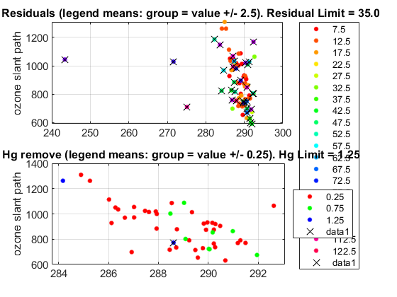 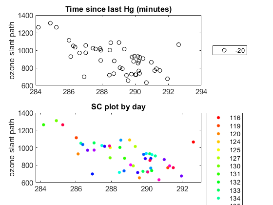 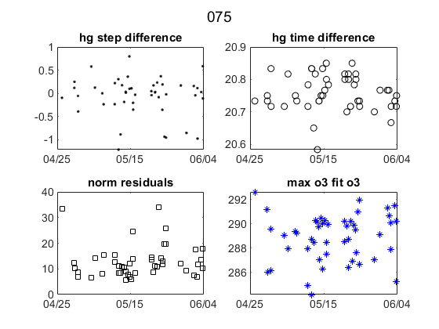 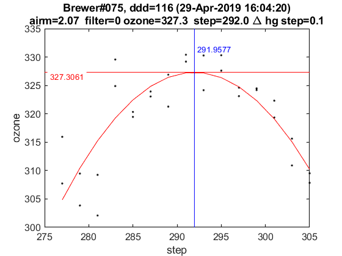 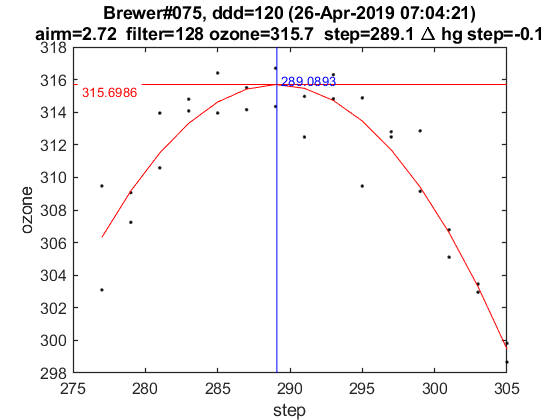 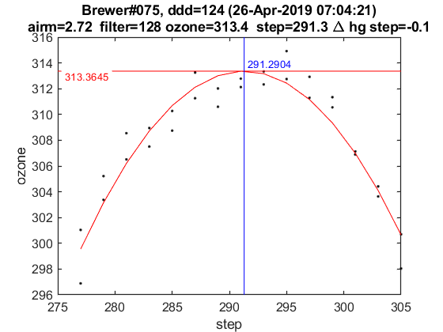 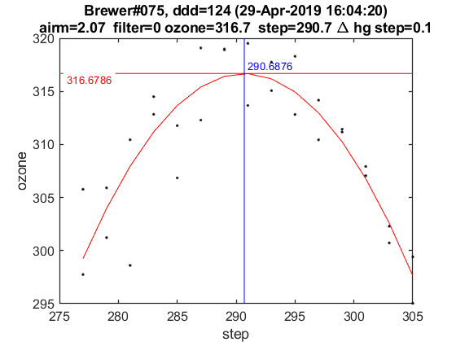 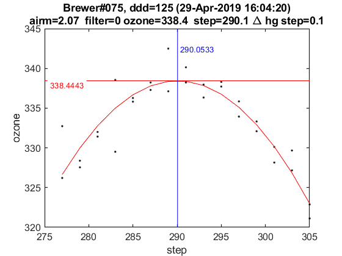 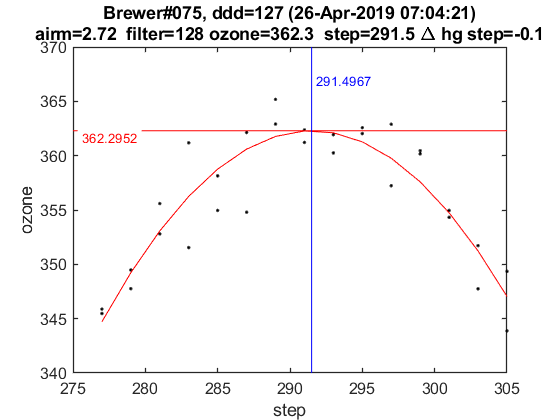 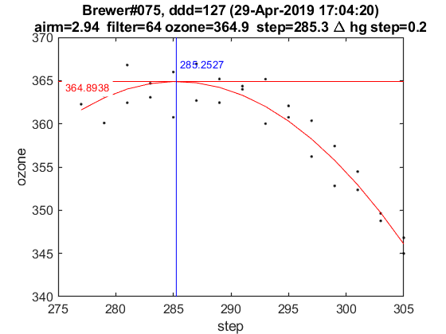 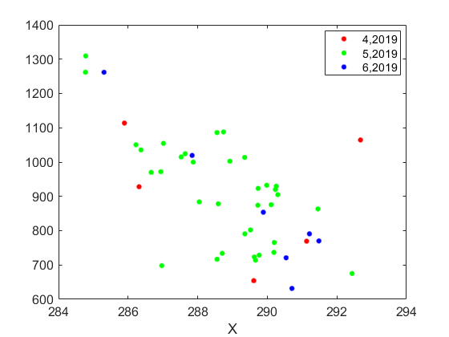

Sun_scan: Campaign
[cal_step{2},sc_avg{2},sc_raw{2},Args{2}]=sc_report(Cal.brw_str{Cal.n_inst},Cal.brw_config_files{Cal.n_inst,2},...
'date_range',datenum(Cal.Date.cal_year,1,Cal.calibration_days{Cal.n_inst,1}([1 end])),...
'CSN_orig',config_def(14),'OSC',Station.OSC,...
'control_flag',1,'residual_limit',15,...
'hg_time',55,'one_flag',1);
075
ix=sort(findobj('tag','SC_INDIVIDUAL')); figure(ix); set(get(gca,'title'),'FontSize',8);
printfiles_report(ix',Cal.dir_figs,'aux_pattern',ix,'FontSize',.9,'Width',8.5,'Height',7);
ix=sort(findobj('tag','Final_SC_Calculation'));
if length(ix)>1
Width=8; Height=6;
for i=1:length(ix), figure(ix(i)); set(get(gca,'title'),'FontSize',8); end
else
Width=13; Height=8;
end
printfiles_report(ix',Cal.dir_figs,'aux_pattern',ix,'Width',Width,'Height',Height);
close all
naux =
1
naux =
1
Definicion de variables: SC
if length(cal_step)>1
d_p=[length(cal_step)-1 length(cal_step)]; tags={'','new'};
else
d_p=1; tags={'new'};
end
idx=1; cal_step_error={};
for t=d_p
cal_step_error{t}=round(mean([abs(cal_step{t}(2)-cal_step{t}(3)),abs(cal_step{t}(2)-cal_step{t}(4))]));
latexcmd(fullfile(Cal.file_latex,['cal_wavelengthSC',tags{idx},'_',Cal.brw_str{Cal.n_inst}]),...
['\numSC',tags{idx}],size(sc_avg{t},1),...
['\CALCSTEP',tags{idx}],round(cal_step{t}(1)),...
['\calsteperror',tags{idx}],cal_step_error{t});
idx=idx+1;
end
load(Cal.file_save,'sunscan');sunscan{Cal.n_inst}.cal_step=cal_step;
sunscan{Cal.n_inst}.cal_step_error=cal_step_error;
sunscan{Cal.n_inst}.sc_avg=sc_avg; sunscan{Cal.n_inst}.sc_raw=sc_raw;
sunscan{Cal.n_inst}.info=Args;
save(Cal.file_save,'-APPEND','sunscan');
dsp calibration
res={}; detail={}; DSP_QUAD={}; QUAD_SUM={}; QUAD_DETAIL={};
CUBIC_SUM={}; CUBIC_DETAIL={}; salida={}; CSN_icf={};
l=dir(fullfile('DSP',[Cal.brw_str{Cal.n_inst},'*']));
ldsp=cellstr(cat(1,l.name));
ldsp=ldsp(end-3:end)
for jj=1:length(ldsp)
if jj==length(ldsp),confign=2; else confign=1; end
try
[res{jj},detail{jj},DSP_QUAD{jj},QUAD_SUM{jj},QUAD_DETAIL{jj},...
CUBIC_SUM{jj},CUBIC_DETAIL{jj},salida{jj},CSN_icf{jj},...
]=dspreport(Cal,'dsp_dir',fullfile('DSP',ldsp{jj}),'config_n',1);
catch
warning(sprintf('Error en %s. DSP: %s',Cal.brw_name{Cal.n_inst},ldsp{jj}));
res{jj}=NaN*ones(15,9,2); detail{jj}=NaN*ones(7,6,15,2); QUAD_DETAIL{jj}=NaN;
end
datefile =
734694
now:W1019011.075
now:W3019011.075
now:W7019011.075
now:W8019011.075
now:W1119011.075
now:W3119011.075
now:W7119011.075
now:W8119011.075
now:W9119011.075
now:W1219011.075
now:W3219011.075
now:W7219011.075
now:W8219011.075
now:W9219011.075
now:W3319011.075
now:W7319011.075
now:W8319011.075
now:W9319011.075
now:W3419011.075
now:W7419011.075
now:W8419011.075
now:W9419011.075
now:W3519011.075
now:W7519011.075
now:W8519011.075
now:W9519011.075
lines_dsp_19011__075
saving alldsp to DSP\075_11_191\alldsp_19011_075.075
saving normaldsp to DSP\075_11_191\dspnorm_19011_075.075 as brewer compatible file
Use polyval(pwl(2,:),wl) for calculating normal wavelengths
Saving ozonecoeffs to DSP\075_11_191\opos19011_075.075
286 WL(A) 3031.63 3062.66 3100.29 3134.79 3167.72 3199.77
Res(A) 11.17 11.05 10.97 11.26 11.23 11.03
O3abs(1/cm) 2.6086 1.7874 1.0057 0.6769 0.3751 0.2948 O3: 0.3431
Daumt O3abs(1/cm) 2.6157 1.7817 0.9974 0.6707 0.3685 0.2951 O3: 0.3532
So2abs(1/cm) 3.4993 5.5353 2.3872 1.9358 1.0496 0.6175
Bremen O3abs(1/cm) 2.6190 1.7850 1.0030 0.6802 0.3736 0.2963 O3: 0.3447
Nicolet 1e4*Rayabs(1/cm) 5052.7 4834.6 4586.1 4372.4 4180.1 4003.3 R: 9.1367
Bates(fix) 1e4*Rayabs(1/cm) 0.0 4870.0 4620.0 4410.0 4220.0 4040.0 R: -1.0000
Bodhaine 1e4*Rayabs(1/cm) 5049.2 4832.6 4585.6 4373.0 4181.7 4005.6 R: 8.7694
I0(mW m^-2nm^-1) 11703.56 9409.50 7264.26 4908.20 4049.02 3219.77 ETC: 1376
Ozone offset due to Rayleigh (RayCOeff/O3Coeff): -2.7 DU
Ozone offset due to Rayleigh (Bodhaine): -2.8 DU
Ratio Ozone for So2(A3)= 1.1552, So2/O3(A2)= 2.6861
O3 factor from Bass & Paur to Daumont = 0.9714
O3 factor from Bass & Paur to Bremen = 0.9954
287 WL(A) 3031.70 3062.73 3100.36 3134.86 3167.78 3199.84
Res(A) 11.17 11.05 10.97 11.26 11.23 11.03
O3abs(1/cm) 2.6062 1.7860 1.0054 0.6766 0.3752 0.2944 O3: 0.3421
Daumt O3abs(1/cm) 2.6132 1.7804 0.9971 0.6706 0.3685 0.2948 O3: 0.3524
So2abs(1/cm) 3.4817 5.5592 2.3942 1.9247 1.0508 0.6155
Bremen O3abs(1/cm) 2.6166 1.7836 1.0027 0.6801 0.3736 0.2960 O3: 0.3439
Nicolet 1e4*Rayabs(1/cm) 5052.1 4834.1 4585.6 4372.0 4179.8 4002.9 R: 9.1347
Bates(fix) 1e4*Rayabs(1/cm) 0.0 4870.0 4620.0 4410.0 4220.0 4040.0 R: -1.0000
Bodhaine 1e4*Rayabs(1/cm) 5048.7 4832.1 4585.2 4372.6 4181.3 4005.2 R: 8.7619
I0(mW m^-2nm^-1) 11697.60 9403.47 7241.74 4904.62 4039.98 3211.12 ETC: 1360
Ozone offset due to Rayleigh (RayCOeff/O3Coeff): -2.7 DU
Ozone offset due to Rayleigh (Bodhaine): -2.9 DU
Ratio Ozone for So2(A3)= 1.1523, So2/O3(A2)= 2.7038
O3 factor from Bass & Paur to Daumont = 0.9709
O3 factor from Bass & Paur to Bremen = 0.9950
288 WL(A) 3031.77 3062.80 3100.43 3134.92 3167.85 3199.90
Res(A) 11.17 11.05 10.97 11.26 11.23 11.03
O3abs(1/cm) 2.6037 1.7846 1.0051 0.6763 0.3752 0.2939 O3: 0.3412
Daumt O3abs(1/cm) 2.6106 1.7791 0.9968 0.6705 0.3684 0.2945 O3: 0.3516
So2abs(1/cm) 3.4659 5.5831 2.4013 1.9136 1.0519 0.6135
Bremen O3abs(1/cm) 2.6142 1.7822 1.0024 0.6799 0.3736 0.2956 O3: 0.3430
Nicolet 1e4*Rayabs(1/cm) 5051.6 4833.7 4585.2 4371.6 4179.4 4002.6 R: 9.1327
Bates(fix) 1e4*Rayabs(1/cm) 0.0 4870.0 4620.0 4410.0 4220.0 4040.0 R: -1.0000
Bodhaine 1e4*Rayabs(1/cm) 5048.2 4831.7 4584.7 4372.2 4181.0 4004.9 R: 8.7645
I0(mW m^-2nm^-1) 11691.64 9397.44 7219.33 4901.05 4030.96 3202.50 ETC: 1345
Ozone offset due to Rayleigh (RayCOeff/O3Coeff): -2.7 DU
Ozone offset due to Rayleigh (Bodhaine): -2.9 DU
Ratio Ozone for So2(A3)= 1.1493, So2/O3(A2)= 2.7217
O3 factor from Bass & Paur to Daumont = 0.9705
O3 factor from Bass & Paur to Bremen = 0.9947
289 WL(A) 3031.84 3062.87 3100.49 3134.99 3167.92 3199.97
Res(A) 11.17 11.05 10.97 11.26 11.23 11.03
O3abs(1/cm) 2.6013 1.7832 1.0048 0.6760 0.3752 0.2935 O3: 0.3403
Daumt O3abs(1/cm) 2.6082 1.7778 0.9964 0.6703 0.3684 0.2941 O3: 0.3507
So2abs(1/cm) 3.4500 5.6056 2.4090 1.9028 1.0531 0.6114
Bremen O3abs(1/cm) 2.6118 1.7808 1.0020 0.6797 0.3736 0.2952 O3: 0.3421
Nicolet 1e4*Rayabs(1/cm) 5051.1 4833.2 4584.8 4371.2 4179.0 4002.2 R: 9.1308
Bates(fix) 1e4*Rayabs(1/cm) 0.0 4870.0 4620.0 4410.0 4220.0 4040.0 R: -1.0000
Bodhaine 1e4*Rayabs(1/cm) 5047.7 4831.2 4584.3 4371.8 4180.6 4004.5 R: 8.7640
I0(mW m^-2nm^-1) 11685.69 9391.42 7198.07 4897.48 4021.96 3193.89 ETC: 1331
Ozone offset due to Rayleigh (RayCOeff/O3Coeff): -2.7 DU
Ozone offset due to Rayleigh (Bodhaine): -2.9 DU
Ratio Ozone for So2(A3)= 1.1464, So2/O3(A2)= 2.7383
O3 factor from Bass & Paur to Daumont = 0.9703
O3 factor from Bass & Paur to Bremen = 0.9946
290 WL(A) 3031.91 3062.94 3100.56 3135.06 3167.98 3200.03
Res(A) 11.17 11.05 10.97 11.26 11.23 11.03
O3abs(1/cm) 2.5990 1.7818 1.0046 0.6756 0.3752 0.2930 O3: 0.3393
Daumt O3abs(1/cm) 2.6057 1.7765 0.9961 0.6701 0.3685 0.2937 O3: 0.3498
So2abs(1/cm) 3.4341 5.6265 2.4167 1.8921 1.0542 0.6093
Bremen O3abs(1/cm) 2.6094 1.7794 1.0017 0.6794 0.3737 0.2948 O3: 0.3412
Nicolet 1e4*Rayabs(1/cm) 5050.6 4832.7 4584.3 4370.8 4178.6 4001.9 R: 9.1288
Bates(fix) 1e4*Rayabs(1/cm) 0.0 4870.0 4620.0 4410.0 4220.0 4040.0 R: -1.0000
Bodhaine 1e4*Rayabs(1/cm) 5047.2 4830.7 4583.9 4371.4 4180.2 4004.2 R: 8.7558
I0(mW m^-2nm^-1) 11679.75 9385.41 7184.73 4893.92 4012.97 3185.29 ETC: 1324
Ozone offset due to Rayleigh (RayCOeff/O3Coeff): -2.7 DU
Ozone offset due to Rayleigh (Bodhaine): -2.9 DU
Ratio Ozone for So2(A3)= 1.1433, So2/O3(A2)= 2.7539
O3 factor from Bass & Paur to Daumont = 0.9700
O3 factor from Bass & Paur to Bremen = 0.9944
291 WL(A) 3031.98 3063.01 3100.63 3135.13 3168.05 3200.10
Res(A) 11.17 11.05 10.97 11.26 11.23 11.03
O3abs(1/cm) 2.5964 1.7802 1.0043 0.6753 0.3753 0.2925 O3: 0.3383
Daumt O3abs(1/cm) 2.6033 1.7751 0.9958 0.6699 0.3685 0.2934 O3: 0.3489
So2abs(1/cm) 3.4186 5.6473 2.4243 1.8810 1.0553 0.6071
Bremen O3abs(1/cm) 2.6070 1.7780 1.0014 0.6792 0.3737 0.2944 O3: 0.3402
Nicolet 1e4*Rayabs(1/cm) 5050.1 4832.3 4583.9 4370.4 4178.3 4001.5 R: 9.1268
Bates(fix) 1e4*Rayabs(1/cm) 0.0 4870.0 4620.0 4410.0 4220.0 4040.0 R: -1.0000
Bodhaine 1e4*Rayabs(1/cm) 5046.7 4830.3 4583.4 4371.0 4179.8 4003.8 R: 8.7590
I0(mW m^-2nm^-1) 11673.82 9379.41 7171.73 4890.35 4004.00 3176.71 ETC: 1318
Ozone offset due to Rayleigh (RayCOeff/O3Coeff): -2.7 DU
Ozone offset due to Rayleigh (Bodhaine): -2.9 DU
Ratio Ozone for So2(A3)= 1.1401, So2/O3(A2)= 2.7698
O3 factor from Bass & Paur to Daumont = 0.9696
O3 factor from Bass & Paur to Bremen = 0.9942
292 WL(A) 3032.05 3063.08 3100.70 3135.19 3168.12 3200.16
Res(A) 11.17 11.05 10.97 11.26 11.23 11.03
O3abs(1/cm) 2.5939 1.7787 1.0040 0.6749 0.3753 0.2920 O3: 0.3373
Daumt O3abs(1/cm) 2.6009 1.7738 0.9955 0.6697 0.3685 0.2930 O3: 0.3479
So2abs(1/cm) 3.4050 5.6681 2.4320 1.8697 1.0564 0.6049
Bremen O3abs(1/cm) 2.6047 1.7765 1.0010 0.6789 0.3737 0.2940 O3: 0.3392
Nicolet 1e4*Rayabs(1/cm) 5049.6 4831.8 4583.5 4370.0 4177.9 4001.2 R: 9.1248
Bates(fix) 1e4*Rayabs(1/cm) 0.0 4870.0 4620.0 4410.0 4220.0 4040.0 R: -1.0000
Bodhaine 1e4*Rayabs(1/cm) 5046.2 4829.8 4583.0 4370.6 4179.5 4003.5 R: 8.7586
I0(mW m^-2nm^-1) 11667.90 9373.42 7159.07 4886.79 3995.05 3168.15 ETC: 1312
Ozone offset due to Rayleigh (RayCOeff/O3Coeff): -2.7 DU
Ozone offset due to Rayleigh (Bodhaine): -2.9 DU
Ratio Ozone for So2(A3)= 1.1368, So2/O3(A2)= 2.7858
O3 factor from Bass & Paur to Daumont = 0.9694
O3 factor from Bass & Paur to Bremen = 0.9942
293 WL(A) 3032.12 3063.15 3100.77 3135.26 3168.18 3200.23
Res(A) 11.17 11.05 10.97 11.26 11.23 11.03
O3abs(1/cm) 2.5914 1.7772 1.0037 0.6745 0.3754 0.2915 O3: 0.3362
Daumt O3abs(1/cm) 2.5985 1.7724 0.9951 0.6694 0.3686 0.2925 O3: 0.3469
So2abs(1/cm) 3.3915 5.6882 2.4403 1.8587 1.0575 0.6027
Bremen O3abs(1/cm) 2.6024 1.7750 1.0007 0.6786 0.3738 0.2936 O3: 0.3382
Nicolet 1e4*Rayabs(1/cm) 5049.1 4831.3 4583.0 4369.5 4177.5 4000.8 R: 9.1228
Bates(fix) 1e4*Rayabs(1/cm) 0.0 4870.0 4620.0 4410.0 4220.0 4040.0 R: -1.0000
Bodhaine 1e4*Rayabs(1/cm) 5045.7 4829.3 4582.6 4370.2 4179.1 4003.1 R: 8.7497
I0(mW m^-2nm^-1) 11661.98 9367.43 7144.18 4883.23 3986.12 3159.61 ETC: 1304
Ozone offset due to Rayleigh (RayCOeff/O3Coeff): -2.7 DU
Ozone offset due to Rayleigh (Bodhaine): -2.9 DU
Ratio Ozone for So2(A3)= 1.1334, So2/O3(A2)= 2.8016
O3 factor from Bass & Paur to Daumont = 0.9691
O3 factor from Bass & Paur to Bremen = 0.9939
294 WL(A) 3032.19 3063.21 3100.84 3135.33 3168.25 3200.30
Res(A) 11.17 11.05 10.97 11.26 11.23 11.03
O3abs(1/cm) 2.5892 1.7756 1.0034 0.6741 0.3754 0.2909 O3: 0.3350
Daumt O3abs(1/cm) 2.5961 1.7710 0.9948 0.6691 0.3686 0.2921 O3: 0.3458
So2abs(1/cm) 3.3781 5.7063 2.4488 1.8479 1.0586 0.6005
Bremen O3abs(1/cm) 2.6001 1.7736 1.0004 0.6783 0.3738 0.2931 O3: 0.3372
Nicolet 1e4*Rayabs(1/cm) 5048.6 4830.8 4582.6 4369.1 4177.1 4000.5 R: 9.1208
Bates(fix) 1e4*Rayabs(1/cm) 0.0 4870.0 4620.0 4410.0 4220.0 4040.0 R: -1.0000
Bodhaine 1e4*Rayabs(1/cm) 5045.2 4828.9 4582.1 4369.8 4178.7 4002.8 R: 8.7536
I0(mW m^-2nm^-1) 11656.07 9361.45 7128.69 4879.67 3977.21 3151.08 ETC: 1296
Ozone offset due to Rayleigh (RayCOeff/O3Coeff): -2.7 DU
Ozone offset due to Rayleigh (Bodhaine): -2.9 DU
Ratio Ozone for So2(A3)= 1.1298, So2/O3(A2)= 2.8161
O3 factor from Bass & Paur to Daumont = 0.9686
O3 factor from Bass & Paur to Bremen = 0.9936
295 WL(A) 3032.26 3063.28 3100.90 3135.40 3168.32 3200.36
Res(A) 11.17 11.05 10.97 11.26 11.23 11.03
O3abs(1/cm) 2.5869 1.7741 1.0031 0.6736 0.3755 0.2904 O3: 0.3338
Daumt O3abs(1/cm) 2.5938 1.7696 0.9945 0.6689 0.3687 0.2916 O3: 0.3447
So2abs(1/cm) 3.3650 5.7238 2.4572 1.8370 1.0596 0.5983
Bremen O3abs(1/cm) 2.5978 1.7721 1.0001 0.6779 0.3739 0.2927 O3: 0.3361
Nicolet 1e4*Rayabs(1/cm) 5048.1 4830.4 4582.2 4368.7 4176.8 4000.1 R: 9.1188
Bates(fix) 1e4*Rayabs(1/cm) 0.0 4870.0 4620.0 4410.0 4220.0 4040.0 R: -1.0000
Bodhaine 1e4*Rayabs(1/cm) 5044.7 4828.4 4581.7 4369.4 4178.3 4002.4 R: 8.7531
I0(mW m^-2nm^-1) 11650.17 9355.48 7113.26 4876.12 3968.31 3142.57 ETC: 1287
Ozone offset due to Rayleigh (RayCOeff/O3Coeff): -2.7 DU
Ozone offset due to Rayleigh (Bodhaine): -2.9 DU
Ratio Ozone for So2(A3)= 1.1262, So2/O3(A2)= 2.8305
O3 factor from Bass & Paur to Daumont = 0.9682
O3 factor from Bass & Paur to Bremen = 0.9933
296 WL(A) 3032.33 3063.35 3100.97 3135.46 3168.38 3200.43
Res(A) 11.17 11.05 10.97 11.26 11.23 11.03
O3abs(1/cm) 2.5847 1.7725 1.0028 0.6731 0.3756 0.2898 O3: 0.3326
Daumt O3abs(1/cm) 2.5915 1.7682 0.9941 0.6685 0.3687 0.2912 O3: 0.3436
So2abs(1/cm) 3.3533 5.7412 2.4656 1.8257 1.0607 0.5960
Bremen O3abs(1/cm) 2.5956 1.7705 0.9997 0.6776 0.3740 0.2922 O3: 0.3349
Nicolet 1e4*Rayabs(1/cm) 5047.6 4829.9 4581.7 4368.3 4176.4 3999.8 R: 9.1168
Bates(fix) 1e4*Rayabs(1/cm) 0.0 4870.0 4620.0 4410.0 4220.0 4040.0 R: -1.0000
Bodhaine 1e4*Rayabs(1/cm) 5044.2 4827.9 4581.3 4369.0 4178.0 4002.1 R: 8.7437
I0(mW m^-2nm^-1) 11644.28 9349.52 7097.88 4872.57 3959.44 3134.08 ETC: 1279
Ozone offset due to Rayleigh (RayCOeff/O3Coeff): -2.7 DU
Ozone offset due to Rayleigh (Bodhaine): -2.9 DU
Ratio Ozone for So2(A3)= 1.1225, So2/O3(A2)= 2.8449
O3 factor from Bass & Paur to Daumont = 0.9681
O3 factor from Bass & Paur to Bremen = 0.9932
saving powfiu7 to DSP\075_11_191\dsp_19011_075.075
freecoef =
4
freecoef =
9
freecoef =
9
freecoef =
9
freecoef =
9
freecoef =
9
freecoef =
9
freecoef =
9
freecoef =
9
freecoef =
9
saving data to file:DSP\075_11_191\dsp_19011_075.075
Use brstps2 to calculate steps and wavelengths
Saving ozonecoeffs to DSP\075_11_191\opos_pow7_19011_075.075
286 WL(A) 3031.60 3062.68 3100.27 3134.74 3167.70 3199.73
Res(A) 11.17 11.04 10.96 11.26 11.23 11.03
O3abs(1/cm) 2.6098 1.7870 1.0058 0.6771 0.3751 0.2951 O3: 0.3435
Daumt O3abs(1/cm) 2.6170 1.7814 0.9975 0.6708 0.3685 0.2953 O3: 0.3535
So2abs(1/cm) 3.5083 5.5432 2.3854 1.9434 1.0493 0.6187
Bremen O3abs(1/cm) 2.6203 1.7846 1.0031 0.6803 0.3736 0.2965 O3: 0.3450
Nicolet 1e4*Rayabs(1/cm) 5052.9 4834.5 4586.2 4372.7 4180.3 4003.5 R: 9.1709
Bates(fix) 1e4*Rayabs(1/cm) 0.0 4870.0 4620.0 4410.0 4220.0 4040.0 R: -1.0000
Bodhaine 1e4*Rayabs(1/cm) 5049.4 4832.5 4585.7 4373.3 4181.8 4005.8 R: 8.7988
I0(mW m^-2nm^-1) 11706.56 9407.69 7269.90 4910.71 4052.04 3224.90 ETC: 1382
Ozone offset due to Rayleigh (RayCOeff/O3Coeff): -2.7 DU
Ozone offset due to Rayleigh (Bodhaine): -2.9 DU
Ratio Ozone for So2(A3)= 1.1556, So2/O3(A2)= 2.6965
O3 factor from Bass & Paur to Daumont = 0.9716
O3 factor from Bass & Paur to Bremen = 0.9955
287 WL(A) 3031.67 3062.75 3100.34 3134.81 3167.76 3199.80
Res(A) 11.17 11.04 10.96 11.26 11.23 11.03
O3abs(1/cm) 2.6074 1.7856 1.0055 0.6768 0.3751 0.2946 O3: 0.3426
Daumt O3abs(1/cm) 2.6144 1.7801 0.9972 0.6707 0.3684 0.2950 O3: 0.3528
So2abs(1/cm) 3.4903 5.5671 2.3924 1.9326 1.0504 0.6167
Bremen O3abs(1/cm) 2.6178 1.7832 1.0028 0.6802 0.3736 0.2962 O3: 0.3442
Nicolet 1e4*Rayabs(1/cm) 5052.4 4834.0 4585.7 4372.3 4179.9 4003.1 R: 9.1687
Bates(fix) 1e4*Rayabs(1/cm) 0.0 4870.0 4620.0 4410.0 4220.0 4040.0 R: -1.0000
Bodhaine 1e4*Rayabs(1/cm) 5048.9 4832.0 4585.3 4372.9 4181.5 4005.4 R: 8.7997
I0(mW m^-2nm^-1) 11700.59 9401.66 7247.31 4907.13 4042.99 3216.25 ETC: 1367
Ozone offset due to Rayleigh (RayCOeff/O3Coeff): -2.7 DU
Ozone offset due to Rayleigh (Bodhaine): -2.9 DU
Ratio Ozone for So2(A3)= 1.1528, So2/O3(A2)= 2.7141
O3 factor from Bass & Paur to Daumont = 0.9711
O3 factor from Bass & Paur to Bremen = 0.9952
288 WL(A) 3031.74 3062.82 3100.41 3134.88 3167.83 3199.86
Res(A) 11.17 11.04 10.96 11.26 11.23 11.03
O3abs(1/cm) 2.6050 1.7842 1.0052 0.6766 0.3752 0.2942 O3: 0.3416
Daumt O3abs(1/cm) 2.6119 1.7788 0.9969 0.6706 0.3684 0.2947 O3: 0.3520
So2abs(1/cm) 3.4738 5.5909 2.3993 1.9214 1.0516 0.6147
Bremen O3abs(1/cm) 2.6154 1.7819 1.0024 0.6800 0.3736 0.2958 O3: 0.3434
Nicolet 1e4*Rayabs(1/cm) 5051.9 4833.5 4585.3 4371.9 4179.5 4002.8 R: 9.1665
Bates(fix) 1e4*Rayabs(1/cm) 0.0 4870.0 4620.0 4410.0 4220.0 4040.0 R: -1.0000
Bodhaine 1e4*Rayabs(1/cm) 5048.4 4831.5 4584.8 4372.5 4181.1 4005.1 R: 8.7993
I0(mW m^-2nm^-1) 11694.63 9395.63 7224.83 4903.55 4033.96 3207.61 ETC: 1351
Ozone offset due to Rayleigh (RayCOeff/O3Coeff): -2.7 DU
Ozone offset due to Rayleigh (Bodhaine): -2.9 DU
Ratio Ozone for So2(A3)= 1.1498, So2/O3(A2)= 2.7320
O3 factor from Bass & Paur to Daumont = 0.9707
O3 factor from Bass & Paur to Bremen = 0.9948
289 WL(A) 3031.81 3062.89 3100.48 3134.94 3167.89 3199.93
Res(A) 11.17 11.04 10.96 11.26 11.23 11.03
O3abs(1/cm) 2.6026 1.7828 1.0049 0.6762 0.3752 0.2937 O3: 0.3407
Daumt O3abs(1/cm) 2.6094 1.7775 0.9965 0.6704 0.3684 0.2943 O3: 0.3511
So2abs(1/cm) 3.4580 5.6127 2.4069 1.9105 1.0527 0.6126
Bremen O3abs(1/cm) 2.6130 1.7805 1.0021 0.6798 0.3736 0.2955 O3: 0.3425
Nicolet 1e4*Rayabs(1/cm) 5051.4 4833.1 4584.9 4371.4 4179.1 4002.4 R: 9.1644
Bates(fix) 1e4*Rayabs(1/cm) 0.0 4870.0 4620.0 4410.0 4220.0 4040.0 R: -1.0000
Bodhaine 1e4*Rayabs(1/cm) 5047.9 4831.1 4584.4 4372.1 4180.7 4004.7 R: 8.7920
I0(mW m^-2nm^-1) 11688.68 9389.61 7202.47 4899.98 4024.94 3198.99 ETC: 1336
Ozone offset due to Rayleigh (RayCOeff/O3Coeff): -2.7 DU
Ozone offset due to Rayleigh (Bodhaine): -2.9 DU
Ratio Ozone for So2(A3)= 1.1469, So2/O3(A2)= 2.7481
O3 factor from Bass & Paur to Daumont = 0.9704
O3 factor from Bass & Paur to Bremen = 0.9947
290 WL(A) 3031.88 3062.96 3100.55 3135.01 3167.96 3199.99
Res(A) 11.17 11.04 10.96 11.26 11.23 11.03
O3abs(1/cm) 2.6002 1.7814 1.0047 0.6759 0.3752 0.2933 O3: 0.3398
Daumt O3abs(1/cm) 2.6069 1.7761 0.9962 0.6703 0.3684 0.2940 O3: 0.3502
So2abs(1/cm) 3.4421 5.6335 2.4147 1.8997 1.0538 0.6105
Bremen O3abs(1/cm) 2.6106 1.7790 1.0018 0.6796 0.3736 0.2951 O3: 0.3416
Nicolet 1e4*Rayabs(1/cm) 5050.9 4832.6 4584.4 4371.0 4178.8 4002.1 R: 9.1622
Bates(fix) 1e4*Rayabs(1/cm) 0.0 4870.0 4620.0 4410.0 4220.0 4040.0 R: -1.0000
Bodhaine 1e4*Rayabs(1/cm) 5047.4 4830.6 4584.0 4371.7 4180.3 4004.4 R: 8.7936
I0(mW m^-2nm^-1) 11682.73 9383.59 7188.72 4896.40 4015.94 3190.39 ETC: 1329
Ozone offset due to Rayleigh (RayCOeff/O3Coeff): -2.7 DU
Ozone offset due to Rayleigh (Bodhaine): -2.9 DU
Ratio Ozone for So2(A3)= 1.1439, So2/O3(A2)= 2.7635
O3 factor from Bass & Paur to Daumont = 0.9702
O3 factor from Bass & Paur to Bremen = 0.9946
291 WL(A) 3031.95 3063.03 3100.61 3135.08 3168.03 3200.06
Res(A) 11.17 11.03 10.96 11.26 11.23 11.03
O3abs(1/cm) 2.5977 1.7798 1.0044 0.6755 0.3752 0.2928 O3: 0.3388
Daumt O3abs(1/cm) 2.6045 1.7748 0.9959 0.6701 0.3685 0.2936 O3: 0.3493
So2abs(1/cm) 3.4264 5.6543 2.4223 1.8889 1.0549 0.6084
Bremen O3abs(1/cm) 2.6082 1.7776 1.0015 0.6794 0.3737 0.2947 O3: 0.3407
Nicolet 1e4*Rayabs(1/cm) 5050.4 4832.1 4584.0 4370.6 4178.4 4001.7 R: 9.1600
Bates(fix) 1e4*Rayabs(1/cm) 0.0 4870.0 4620.0 4410.0 4220.0 4040.0 R: -1.0000
Bodhaine 1e4*Rayabs(1/cm) 5046.9 4830.1 4583.5 4371.3 4180.0 4004.0 R: 8.7933
I0(mW m^-2nm^-1) 11676.80 9377.59 7175.62 4892.84 4006.97 3181.81 ETC: 1323
Ozone offset due to Rayleigh (RayCOeff/O3Coeff): -2.7 DU
Ozone offset due to Rayleigh (Bodhaine): -2.9 DU
Ratio Ozone for So2(A3)= 1.1406, So2/O3(A2)= 2.7795
O3 factor from Bass & Paur to Daumont = 0.9698
O3 factor from Bass & Paur to Bremen = 0.9944
292 WL(A) 3032.01 3063.10 3100.68 3135.15 3168.09 3200.12
Res(A) 11.17 11.03 10.96 11.26 11.23 11.03
O3abs(1/cm) 2.5952 1.7783 1.0041 0.6752 0.3753 0.2923 O3: 0.3377
Daumt O3abs(1/cm) 2.6021 1.7734 0.9955 0.6698 0.3685 0.2932 O3: 0.3483
So2abs(1/cm) 3.4118 5.6751 2.4300 1.8777 1.0560 0.6062
Bremen O3abs(1/cm) 2.6059 1.7761 1.0011 0.6791 0.3737 0.2943 O3: 0.3397
Nicolet 1e4*Rayabs(1/cm) 5049.9 4831.6 4583.6 4370.2 4178.0 4001.4 R: 9.1578
Bates(fix) 1e4*Rayabs(1/cm) 0.0 4870.0 4620.0 4410.0 4220.0 4040.0 R: -1.0000
Bodhaine 1e4*Rayabs(1/cm) 5046.4 4829.7 4583.1 4370.9 4179.6 4003.7 R: 8.7855
I0(mW m^-2nm^-1) 11670.87 9371.59 7162.86 4889.27 3998.01 3173.24 ETC: 1317
Ozone offset due to Rayleigh (RayCOeff/O3Coeff): -2.7 DU
Ozone offset due to Rayleigh (Bodhaine): -2.9 DU
Ratio Ozone for So2(A3)= 1.1374, So2/O3(A2)= 2.7954
O3 factor from Bass & Paur to Daumont = 0.9696
O3 factor from Bass & Paur to Bremen = 0.9943
293 WL(A) 3032.08 3063.17 3100.75 3135.21 3168.16 3200.19
Res(A) 11.17 11.03 10.96 11.26 11.23 11.03
O3abs(1/cm) 2.5926 1.7768 1.0038 0.6748 0.3753 0.2918 O3: 0.3367
Daumt O3abs(1/cm) 2.5996 1.7720 0.9952 0.6696 0.3685 0.2928 O3: 0.3473
So2abs(1/cm) 3.3983 5.6945 2.4381 1.8665 1.0572 0.6040
Bremen O3abs(1/cm) 2.6035 1.7746 1.0008 0.6788 0.3738 0.2939 O3: 0.3387
Nicolet 1e4*Rayabs(1/cm) 5049.4 4831.2 4583.1 4369.8 4177.6 4001.0 R: 9.1556
Bates(fix) 1e4*Rayabs(1/cm) 0.0 4870.0 4620.0 4410.0 4220.0 4040.0 R: -1.0000
Bodhaine 1e4*Rayabs(1/cm) 5045.9 4829.2 4582.7 4370.5 4179.2 4003.3 R: 8.7875
I0(mW m^-2nm^-1) 11664.95 9365.60 7148.62 4885.71 3989.07 3164.69 ETC: 1310
Ozone offset due to Rayleigh (RayCOeff/O3Coeff): -2.7 DU
Ozone offset due to Rayleigh (Bodhaine): -2.9 DU
Ratio Ozone for So2(A3)= 1.1341, So2/O3(A2)= 2.8105
O3 factor from Bass & Paur to Daumont = 0.9693
O3 factor from Bass & Paur to Bremen = 0.9941
294 WL(A) 3032.15 3063.23 3100.82 3135.28 3168.23 3200.26
Res(A) 11.17 11.03 10.96 11.26 11.23 11.03
O3abs(1/cm) 2.5903 1.7752 1.0035 0.6744 0.3754 0.2912 O3: 0.3355
Daumt O3abs(1/cm) 2.5973 1.7706 0.9949 0.6694 0.3686 0.2924 O3: 0.3463
So2abs(1/cm) 3.3848 5.7123 2.4465 1.8556 1.0582 0.6018
Bremen O3abs(1/cm) 2.6012 1.7732 1.0005 0.6785 0.3738 0.2934 O3: 0.3376
Nicolet 1e4*Rayabs(1/cm) 5048.9 4830.7 4582.7 4369.4 4177.3 4000.7 R: 9.1535
Bates(fix) 1e4*Rayabs(1/cm) 0.0 4870.0 4620.0 4410.0 4220.0 4040.0 R: -1.0000
Bodhaine 1e4*Rayabs(1/cm) 5045.4 4828.7 4582.2 4370.1 4178.8 4003.0 R: 8.7872
I0(mW m^-2nm^-1) 11659.04 9359.62 7133.11 4882.15 3980.14 3156.15 ETC: 1301
Ozone offset due to Rayleigh (RayCOeff/O3Coeff): -2.7 DU
Ozone offset due to Rayleigh (Bodhaine): -2.9 DU
Ratio Ozone for So2(A3)= 1.1306, So2/O3(A2)= 2.8245
O3 factor from Bass & Paur to Daumont = 0.9688
O3 factor from Bass & Paur to Bremen = 0.9938
295 WL(A) 3032.22 3063.30 3100.89 3135.35 3168.29 3200.32
Res(A) 11.17 11.03 10.96 11.26 11.23 11.03
O3abs(1/cm) 2.5880 1.7737 1.0032 0.6740 0.3755 0.2907 O3: 0.3343
Daumt O3abs(1/cm) 2.5949 1.7692 0.9945 0.6691 0.3686 0.2919 O3: 0.3452
So2abs(1/cm) 3.3715 5.7297 2.4550 1.8448 1.0593 0.5996
Bremen O3abs(1/cm) 2.5990 1.7716 1.0001 0.6782 0.3739 0.2930 O3: 0.3365
Nicolet 1e4*Rayabs(1/cm) 5048.4 4830.2 4582.3 4369.0 4176.9 4000.3 R: 9.1513
Bates(fix) 1e4*Rayabs(1/cm) 0.0 4870.0 4620.0 4410.0 4220.0 4040.0 R: -1.0000
Bodhaine 1e4*Rayabs(1/cm) 5044.9 4828.3 4581.8 4369.7 4178.5 4002.6 R: 8.7793
I0(mW m^-2nm^-1) 11653.13 9353.65 7117.65 4878.59 3971.24 3147.63 ETC: 1293
Ozone offset due to Rayleigh (RayCOeff/O3Coeff): -2.7 DU
Ozone offset due to Rayleigh (Bodhaine): -2.9 DU
Ratio Ozone for So2(A3)= 1.1269, So2/O3(A2)= 2.8390
O3 factor from Bass & Paur to Daumont = 0.9684
O3 factor from Bass & Paur to Bremen = 0.9934
296 WL(A) 3032.29 3063.37 3100.96 3135.42 3168.36 3200.39
Res(A) 11.17 11.03 10.96 11.26 11.23 11.03
O3abs(1/cm) 2.5858 1.7721 1.0028 0.6735 0.3755 0.2901 O3: 0.3332
Daumt O3abs(1/cm) 2.5926 1.7678 0.9942 0.6688 0.3687 0.2915 O3: 0.3441
So2abs(1/cm) 3.3588 5.7472 2.4633 1.8337 1.0603 0.5974
Bremen O3abs(1/cm) 2.5967 1.7701 0.9998 0.6778 0.3739 0.2925 O3: 0.3354
Nicolet 1e4*Rayabs(1/cm) 5047.9 4829.8 4581.8 4368.6 4176.5 4000.0 R: 9.1491
Bates(fix) 1e4*Rayabs(1/cm) 0.0 4870.0 4620.0 4410.0 4220.0 4040.0 R: -1.0000
Bodhaine 1e4*Rayabs(1/cm) 5044.4 4827.8 4581.4 4369.3 4178.1 4002.3 R: 8.7814
I0(mW m^-2nm^-1) 11647.24 9347.69 7102.24 4875.03 3962.35 3139.13 ETC: 1284
Ozone offset due to Rayleigh (RayCOeff/O3Coeff): -2.7 DU
Ozone offset due to Rayleigh (Bodhaine): -2.9 DU
Ratio Ozone for So2(A3)= 1.1233, So2/O3(A2)= 2.8535
O3 factor from Bass & Paur to Daumont = 0.9681
O3 factor from Bass & Paur to Bremen = 0.9932
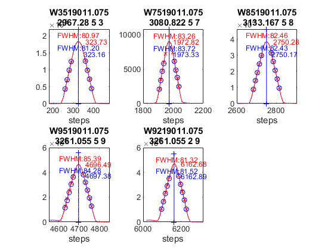 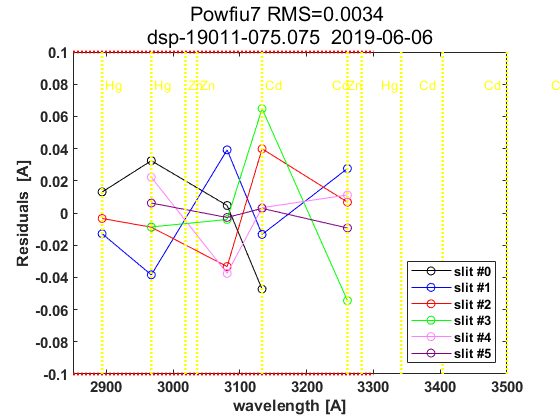 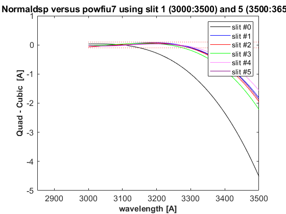
datefile =
735400
now:W1016513.075
now:W3016513.075
now:W7016513.075
now:W8016513.075
now:W1116513.075
now:W3116513.075
now:W7116513.075
now:W8116513.075
now:W1216513.075
now:W3216513.075
now:W7216513.075
now:W8216513.075
now:W1316513.075
now:W3316513.075
now:W7316513.075
now:W8316513.075
now:W9316513.075
now:W1416513.075
now:W3416513.075
now:W7416513.075
now:W8416513.075
now:W9416513.075
now:W1516513.075
now:W3516513.075
now:W7516513.075
now:W8516513.075
now:W9516513.075
lines_dsp_16513__075
saving alldsp to DSP\075_13_166\alldsp_16513_075.075
eliminamos la linea slit 5 3261.055000 -1.746626
eliminamos la linea slit 5 2893.600000 5.000549
saving normaldsp to DSP\075_13_166\dspnorm_16513_075.075 as brewer compatible file
Use polyval(pwl(2,:),wl) for calculating normal wavelengths
Saving ozonecoeffs to DSP\075_13_166\opos16513_075.075
286 WL(A) 3031.51 3062.56 3100.13 3134.57 3167.55 3199.54
Res(A) 11.13 10.96 10.92 11.16 11.11 10.87
O3abs(1/cm) 2.6130 1.7897 1.0064 0.6778 0.3750 0.2965 O3: 0.3466
Daumt O3abs(1/cm) 2.6200 1.7838 0.9982 0.6712 0.3684 0.2965 O3: 0.3562
So2abs(1/cm) 3.5281 5.5045 2.3699 1.9705 1.0468 0.6251
Bremen O3abs(1/cm) 2.6232 1.7872 1.0038 0.6809 0.3735 0.2977 O3: 0.3478
Nicolet 1e4*Rayabs(1/cm) 5053.5 4835.3 4587.1 4373.7 4181.1 4004.5 R: 9.5549
Bates(fix) 1e4*Rayabs(1/cm) 0.0 4870.0 4620.0 4410.0 4220.0 4040.0 R: -1.0000
Bodhaine 1e4*Rayabs(1/cm) 5050.0 4833.3 4586.6 4374.3 4182.7 4006.8 R: 9.1837
I0(mW m^-2nm^-1) 11714.41 9418.56 7320.69 4919.42 4071.86 3249.63 ETC: 1427
Ozone offset due to Rayleigh (RayCOeff/O3Coeff): -2.8 DU
Ozone offset due to Rayleigh (Bodhaine): -2.9 DU
Ratio Ozone for So2(A3)= 1.1636, So2/O3(A2)= 2.6712
O3 factor from Bass & Paur to Daumont = 0.9729
O3 factor from Bass & Paur to Bremen = 0.9965
287 WL(A) 3031.58 3062.63 3100.20 3134.64 3167.62 3199.60
Res(A) 11.13 10.96 10.92 11.16 11.11 10.87
O3abs(1/cm) 2.6103 1.7883 1.0061 0.6776 0.3750 0.2962 O3: 0.3458
Daumt O3abs(1/cm) 2.6174 1.7825 0.9979 0.6712 0.3683 0.2962 O3: 0.3556
So2abs(1/cm) 3.5098 5.5292 2.3767 1.9597 1.0480 0.6232
Bremen O3abs(1/cm) 2.6207 1.7859 1.0035 0.6808 0.3735 0.2974 O3: 0.3471
Nicolet 1e4*Rayabs(1/cm) 5053.0 4834.8 4586.7 4373.3 4180.7 4004.2 R: 9.5546
Bates(fix) 1e4*Rayabs(1/cm) 0.0 4870.0 4620.0 4410.0 4220.0 4040.0 R: -1.0000
Bodhaine 1e4*Rayabs(1/cm) 5049.5 4832.8 4586.2 4373.9 4182.3 4006.5 R: 9.1827
I0(mW m^-2nm^-1) 11708.40 9412.44 7297.64 4915.75 4062.58 3242.42 ETC: 1414
Ozone offset due to Rayleigh (RayCOeff/O3Coeff): -2.8 DU
Ozone offset due to Rayleigh (Bodhaine): -2.9 DU
Ratio Ozone for So2(A3)= 1.1610, So2/O3(A2)= 2.6889
O3 factor from Bass & Paur to Daumont = 0.9724
O3 factor from Bass & Paur to Bremen = 0.9961
288 WL(A) 3031.65 3062.70 3100.26 3134.71 3167.68 3199.67
Res(A) 11.13 10.96 10.92 11.16 11.11 10.87
O3abs(1/cm) 2.6078 1.7869 1.0058 0.6774 0.3750 0.2958 O3: 0.3449
Daumt O3abs(1/cm) 2.6149 1.7813 0.9976 0.6711 0.3683 0.2959 O3: 0.3548
So2abs(1/cm) 3.4915 5.5534 2.3837 1.9490 1.0491 0.6212
Bremen O3abs(1/cm) 2.6182 1.7845 1.0032 0.6807 0.3734 0.2971 O3: 0.3464
Nicolet 1e4*Rayabs(1/cm) 5052.5 4834.4 4586.2 4372.9 4180.3 4003.8 R: 9.5544
Bates(fix) 1e4*Rayabs(1/cm) 0.0 4870.0 4620.0 4410.0 4220.0 4040.0 R: -1.0000
Bodhaine 1e4*Rayabs(1/cm) 5049.0 4832.4 4585.7 4373.5 4181.9 4006.1 R: 9.1844
I0(mW m^-2nm^-1) 11702.39 9406.32 7274.70 4912.08 4053.31 3233.38 ETC: 1398
Ozone offset due to Rayleigh (RayCOeff/O3Coeff): -2.8 DU
Ozone offset due to Rayleigh (Bodhaine): -3.0 DU
Ratio Ozone for So2(A3)= 1.1584, So2/O3(A2)= 2.7064
O3 factor from Bass & Paur to Daumont = 0.9719
O3 factor from Bass & Paur to Bremen = 0.9958
289 WL(A) 3031.72 3062.77 3100.33 3134.78 3167.75 3199.73
Res(A) 11.13 10.96 10.92 11.16 11.11 10.87
O3abs(1/cm) 2.6054 1.7855 1.0055 0.6772 0.3750 0.2954 O3: 0.3440
Daumt O3abs(1/cm) 2.6123 1.7800 0.9972 0.6710 0.3683 0.2956 O3: 0.3541
So2abs(1/cm) 3.4751 5.5777 2.3906 1.9382 1.0503 0.6193
Bremen O3abs(1/cm) 2.6158 1.7831 1.0028 0.6805 0.3734 0.2968 O3: 0.3456
Nicolet 1e4*Rayabs(1/cm) 5052.0 4833.9 4585.8 4372.5 4180.0 4003.5 R: 9.5542
Bates(fix) 1e4*Rayabs(1/cm) 0.0 4870.0 4620.0 4410.0 4220.0 4040.0 R: -1.0000
Bodhaine 1e4*Rayabs(1/cm) 5048.5 4831.9 4585.3 4373.1 4181.5 4005.8 R: 9.1835
I0(mW m^-2nm^-1) 11696.40 9400.22 7251.89 4908.42 4044.07 3224.35 ETC: 1382
Ozone offset due to Rayleigh (RayCOeff/O3Coeff): -2.8 DU
Ozone offset due to Rayleigh (Bodhaine): -3.0 DU
Ratio Ozone for So2(A3)= 1.1556, So2/O3(A2)= 2.7242
O3 factor from Bass & Paur to Daumont = 0.9714
O3 factor from Bass & Paur to Bremen = 0.9954
290 WL(A) 3031.79 3062.83 3100.40 3134.84 3167.82 3199.80
Res(A) 11.13 10.96 10.92 11.16 11.11 10.87
O3abs(1/cm) 2.6030 1.7841 1.0052 0.6770 0.3751 0.2949 O3: 0.3430
Daumt O3abs(1/cm) 2.6098 1.7787 0.9969 0.6709 0.3683 0.2953 O3: 0.3533
So2abs(1/cm) 3.4591 5.6003 2.3977 1.9273 1.0515 0.6173
Bremen O3abs(1/cm) 2.6134 1.7818 1.0025 0.6804 0.3734 0.2965 O3: 0.3448
Nicolet 1e4*Rayabs(1/cm) 5051.5 4833.4 4585.4 4372.1 4179.6 4003.1 R: 9.5540
Bates(fix) 1e4*Rayabs(1/cm) 0.0 4870.0 4620.0 4410.0 4220.0 4040.0 R: -1.0000
Bodhaine 1e4*Rayabs(1/cm) 5048.0 4831.4 4584.9 4372.7 4181.2 4005.4 R: 9.1826
I0(mW m^-2nm^-1) 11690.41 9394.12 7229.20 4904.76 4034.85 3215.35 ETC: 1366
Ozone offset due to Rayleigh (RayCOeff/O3Coeff): -2.8 DU
Ozone offset due to Rayleigh (Bodhaine): -3.0 DU
Ratio Ozone for So2(A3)= 1.1526, So2/O3(A2)= 2.7410
O3 factor from Bass & Paur to Daumont = 0.9709
O3 factor from Bass & Paur to Bremen = 0.9950
291 WL(A) 3031.86 3062.90 3100.47 3134.91 3167.88 3199.86
Res(A) 11.13 10.96 10.92 11.16 11.11 10.87
O3abs(1/cm) 2.6005 1.7826 1.0050 0.6767 0.3751 0.2945 O3: 0.3420
Daumt O3abs(1/cm) 2.6073 1.7774 0.9966 0.6708 0.3683 0.2950 O3: 0.3525
So2abs(1/cm) 3.4431 5.6223 2.4050 1.9161 1.0526 0.6152
Bremen O3abs(1/cm) 2.6110 1.7803 1.0022 0.6802 0.3735 0.2961 O3: 0.3439
Nicolet 1e4*Rayabs(1/cm) 5051.0 4833.0 4584.9 4371.6 4179.2 4002.8 R: 9.5538
Bates(fix) 1e4*Rayabs(1/cm) 0.0 4870.0 4620.0 4410.0 4220.0 4040.0 R: -1.0000
Bodhaine 1e4*Rayabs(1/cm) 5047.5 4831.0 4584.5 4372.3 4180.8 4005.1 R: 9.1842
I0(mW m^-2nm^-1) 11684.43 9388.03 7207.45 4901.10 4025.65 3206.36 ETC: 1351
Ozone offset due to Rayleigh (RayCOeff/O3Coeff): -2.8 DU
Ozone offset due to Rayleigh (Bodhaine): -3.0 DU
Ratio Ozone for So2(A3)= 1.1496, So2/O3(A2)= 2.7574
O3 factor from Bass & Paur to Daumont = 0.9703
O3 factor from Bass & Paur to Bremen = 0.9946
292 WL(A) 3031.93 3062.97 3100.54 3134.98 3167.95 3199.93
Res(A) 11.13 10.96 10.92 11.16 11.11 10.87
O3abs(1/cm) 2.5981 1.7812 1.0047 0.6764 0.3751 0.2940 O3: 0.3411
Daumt O3abs(1/cm) 2.6049 1.7760 0.9963 0.6706 0.3683 0.2946 O3: 0.3516
So2abs(1/cm) 3.4272 5.6435 2.4128 1.9052 1.0538 0.6132
Bremen O3abs(1/cm) 2.6086 1.7789 1.0018 0.6800 0.3735 0.2958 O3: 0.3430
Nicolet 1e4*Rayabs(1/cm) 5050.5 4832.5 4584.5 4371.2 4178.8 4002.4 R: 9.5535
Bates(fix) 1e4*Rayabs(1/cm) 0.0 4870.0 4620.0 4410.0 4220.0 4040.0 R: -1.0000
Bodhaine 1e4*Rayabs(1/cm) 5047.0 4830.5 4584.0 4371.9 4180.4 4004.7 R: 9.1833
I0(mW m^-2nm^-1) 11678.46 9381.95 7193.83 4897.44 4016.47 3197.39 ETC: 1344
Ozone offset due to Rayleigh (RayCOeff/O3Coeff): -2.8 DU
Ozone offset due to Rayleigh (Bodhaine): -3.0 DU
Ratio Ozone for So2(A3)= 1.1466, So2/O3(A2)= 2.7733
O3 factor from Bass & Paur to Daumont = 0.9702
O3 factor from Bass & Paur to Bremen = 0.9945
293 WL(A) 3032.00 3063.04 3100.60 3135.05 3168.02 3200.00
Res(A) 11.13 10.96 10.92 11.16 11.11 10.87
O3abs(1/cm) 2.5956 1.7798 1.0044 0.6760 0.3751 0.2936 O3: 0.3402
Daumt O3abs(1/cm) 2.6025 1.7747 0.9959 0.6704 0.3683 0.2943 O3: 0.3507
So2abs(1/cm) 3.4125 5.6646 2.4204 1.8943 1.0549 0.6111
Bremen O3abs(1/cm) 2.6063 1.7775 1.0015 0.6797 0.3735 0.2954 O3: 0.3421
Nicolet 1e4*Rayabs(1/cm) 5050.0 4832.0 4584.1 4370.8 4178.5 4002.1 R: 9.5533
Bates(fix) 1e4*Rayabs(1/cm) 0.0 4870.0 4620.0 4410.0 4220.0 4040.0 R: -1.0000
Bodhaine 1e4*Rayabs(1/cm) 5046.5 4830.0 4583.6 4371.5 4180.0 4004.4 R: 9.1825
I0(mW m^-2nm^-1) 11672.49 9375.88 7180.56 4893.79 4007.30 3188.44 ETC: 1338
Ozone offset due to Rayleigh (RayCOeff/O3Coeff): -2.8 DU
Ozone offset due to Rayleigh (Bodhaine): -3.0 DU
Ratio Ozone for So2(A3)= 1.1437, So2/O3(A2)= 2.7887
O3 factor from Bass & Paur to Daumont = 0.9701
O3 factor from Bass & Paur to Bremen = 0.9946
294 WL(A) 3032.07 3063.11 3100.67 3135.11 3168.08 3200.06
Res(A) 11.13 10.96 10.92 11.16 11.11 10.87
O3abs(1/cm) 2.5930 1.7782 1.0042 0.6757 0.3752 0.2931 O3: 0.3393
Daumt O3abs(1/cm) 2.6001 1.7733 0.9956 0.6702 0.3684 0.2939 O3: 0.3498
So2abs(1/cm) 3.3990 5.6848 2.4282 1.8834 1.0560 0.6090
Bremen O3abs(1/cm) 2.6039 1.7760 1.0012 0.6795 0.3736 0.2950 O3: 0.3411
Nicolet 1e4*Rayabs(1/cm) 5049.5 4831.6 4583.6 4370.4 4178.1 4001.7 R: 9.5531
Bates(fix) 1e4*Rayabs(1/cm) 0.0 4870.0 4620.0 4410.0 4220.0 4040.0 R: -1.0000
Bodhaine 1e4*Rayabs(1/cm) 5046.0 4829.6 4583.2 4371.1 4179.7 4004.0 R: 9.1836
I0(mW m^-2nm^-1) 11666.54 9369.81 7167.65 4890.14 3998.16 3179.51 ETC: 1332
Ozone offset due to Rayleigh (RayCOeff/O3Coeff): -2.8 DU
Ozone offset due to Rayleigh (Bodhaine): -3.0 DU
Ratio Ozone for So2(A3)= 1.1406, So2/O3(A2)= 2.8039
O3 factor from Bass & Paur to Daumont = 0.9700
O3 factor from Bass & Paur to Bremen = 0.9946
295 WL(A) 3032.14 3063.18 3100.74 3135.18 3168.15 3200.13
Res(A) 11.13 10.96 10.92 11.16 11.11 10.87
O3abs(1/cm) 2.5907 1.7767 1.0039 0.6753 0.3752 0.2926 O3: 0.3382
Daumt O3abs(1/cm) 2.5977 1.7719 0.9953 0.6700 0.3684 0.2935 O3: 0.3488
So2abs(1/cm) 3.3854 5.7038 2.4360 1.8720 1.0572 0.6067
Bremen O3abs(1/cm) 2.6017 1.7745 1.0009 0.6792 0.3736 0.2946 O3: 0.3401
Nicolet 1e4*Rayabs(1/cm) 5049.0 4831.1 4583.2 4370.0 4177.7 4001.4 R: 9.5529
Bates(fix) 1e4*Rayabs(1/cm) 0.0 4870.0 4620.0 4410.0 4220.0 4040.0 R: -1.0000
Bodhaine 1e4*Rayabs(1/cm) 5045.6 4829.1 4582.7 4370.7 4179.3 4003.7 R: 9.1828
I0(mW m^-2nm^-1) 11660.59 9363.76 7153.65 4886.49 3989.03 3170.60 ETC: 1325
Ozone offset due to Rayleigh (RayCOeff/O3Coeff): -2.8 DU
Ozone offset due to Rayleigh (Bodhaine): -3.0 DU
Ratio Ozone for So2(A3)= 1.1371, So2/O3(A2)= 2.8186
O3 factor from Bass & Paur to Daumont = 0.9695
O3 factor from Bass & Paur to Bremen = 0.9943
296 WL(A) 3032.21 3063.25 3100.81 3135.25 3168.21 3200.19
Res(A) 11.13 10.96 10.92 11.16 11.11 10.87
O3abs(1/cm) 2.5885 1.7751 1.0036 0.6749 0.3753 0.2921 O3: 0.3371
Daumt O3abs(1/cm) 2.5954 1.7705 0.9950 0.6698 0.3685 0.2931 O3: 0.3478
So2abs(1/cm) 3.3718 5.7220 2.4445 1.8610 1.0583 0.6045
Bremen O3abs(1/cm) 2.5994 1.7730 1.0005 0.6789 0.3737 0.2942 O3: 0.3391
Nicolet 1e4*Rayabs(1/cm) 5048.5 4830.6 4582.8 4369.6 4177.3 4001.0 R: 9.5527
Bates(fix) 1e4*Rayabs(1/cm) 0.0 4870.0 4620.0 4410.0 4220.0 4040.0 R: -1.0000
Bodhaine 1e4*Rayabs(1/cm) 5045.1 4828.6 4582.3 4370.3 4178.9 4003.3 R: 9.1825
I0(mW m^-2nm^-1) 11654.65 9357.71 7138.03 4882.84 3979.92 3161.70 ETC: 1316
Ozone offset due to Rayleigh (RayCOeff/O3Coeff): -2.8 DU
Ozone offset due to Rayleigh (Bodhaine): -3.0 DU
Ratio Ozone for So2(A3)= 1.1337, So2/O3(A2)= 2.8331
O3 factor from Bass & Paur to Daumont = 0.9692
O3 factor from Bass & Paur to Bremen = 0.9940
saving powfiu7 to DSP\075_13_166\dsp_16513_075.075
freecoef =
4
freecoef =
9
freecoef =
9
freecoef =
9
freecoef =
9
freecoef =
9
freecoef =
9
freecoef =
9
freecoef =
9
freecoef =
9
saving data to file:DSP\075_13_166\dsp_16513_075.075
Too large slitpos deviation: Recalc with slit #6 shifted by 0.076
freecoef =
4
freecoef =
9
freecoef =
9
freecoef =
9
freecoef =
9
freecoef =
9
freecoef =
9
freecoef =
9
freecoef =
9
freecoef =
9
saving data to file:DSP\075_13_166\dsp_16513_075.075
Residuals using powfiu7 [RMS]:
Columns 1 through 6
5.6023 5.9765 5.8821 5.8543 5.8424 5.8352
Columns 7 through 10
5.83 5.8259 5.8226 5.8199
Use brstps2 to calculate steps and wavelengths
Saving ozonecoeffs to DSP\075_13_166\opos_pow7_16513_075.075
286 WL(A) 3030.72 3062.21 3100.54 3134.75 3163.00 3200.62
Res(A) 10.89 10.72 10.69 10.90 10.86 10.63
O3abs(1/cm) 2.6435 1.7969 1.0049 0.6781 0.4040 0.2890 O3: 0.2684
Daumt O3abs(1/cm) 2.6504 1.7902 0.9963 0.6717 0.4012 0.2906 O3: 0.2719
So2abs(1/cm) 3.7595 5.3835 2.4088 1.9431 1.0417 0.5903
Bremen O3abs(1/cm) 2.6527 1.7941 1.0019 0.6812 0.4058 0.2916 O3: 0.2643
Nicolet 1e4*Rayabs(1/cm) 5059.2 4837.7 4584.5 4372.6 4207.0 3998.7 R:-59.5136
Bates(fix) 1e4*Rayabs(1/cm) 0.0 4870.0 4620.0 4410.0 4220.0 4040.0 R: -1.0000
Bodhaine 1e4*Rayabs(1/cm) 5055.7 4835.7 4584.0 4373.3 4208.5 4001.0 R:-59.5832
I0(mW m^-2nm^-1) 11789.72 9450.50 7212.64 4908.58 4801.34 3125.17 ETC: -492
Ozone offset due to Rayleigh (RayCOeff/O3Coeff): 22.2 DU
Ozone offset due to Rayleigh (Bodhaine): 21.8 DU
Ratio Ozone for So2(A3)= 1.0251, So2/O3(A2)= 2.8267
O3 factor from Bass & Paur to Daumont = 0.9872
O3 factor from Bass & Paur to Bremen = 1.0155
287 WL(A) 3030.79 3062.28 3100.61 3134.82 3163.06 3200.69
Res(A) 10.89 10.72 10.69 10.90 10.86 10.63
O3abs(1/cm) 2.6406 1.7956 1.0046 0.6778 0.4032 0.2885 O3: 0.2690
Daumt O3abs(1/cm) 2.6476 1.7891 0.9960 0.6716 0.4004 0.2901 O3: 0.2726
So2abs(1/cm) 3.7361 5.4118 2.4165 1.9324 1.0397 0.5881
Bremen O3abs(1/cm) 2.6500 1.7929 1.0016 0.6811 0.4049 0.2911 O3: 0.2651
Nicolet 1e4*Rayabs(1/cm) 5058.7 4837.2 4584.0 4372.2 4206.7 3998.4 R:-59.5064
Bates(fix) 1e4*Rayabs(1/cm) 0.0 4870.0 4620.0 4410.0 4220.0 4040.0 R: -1.0000
Bodhaine 1e4*Rayabs(1/cm) 5055.2 4835.2 4583.6 4372.9 4208.1 4000.7 R:-59.5735
I0(mW m^-2nm^-1) 11783.49 9444.22 7198.86 4904.77 4793.80 3122.35 ETC: -492
Ozone offset due to Rayleigh (RayCOeff/O3Coeff): 22.1 DU
Ozone offset due to Rayleigh (Bodhaine): 21.8 DU
Ratio Ozone for So2(A3)= 1.0251, So2/O3(A2)= 2.8552
O3 factor from Bass & Paur to Daumont = 0.9867
O3 factor from Bass & Paur to Bremen = 1.0148
288 WL(A) 3030.86 3062.35 3100.68 3134.88 3163.13 3200.75
Res(A) 10.89 10.72 10.69 10.90 10.86 10.63
O3abs(1/cm) 2.6378 1.7942 1.0044 0.6776 0.4024 0.2878 O3: 0.2694
Daumt O3abs(1/cm) 2.6448 1.7879 0.9957 0.6715 0.3995 0.2896 O3: 0.2733
So2abs(1/cm) 3.7131 5.4397 2.4244 1.9217 1.0377 0.5857
Bremen O3abs(1/cm) 2.6473 1.7916 1.0013 0.6809 0.4041 0.2905 O3: 0.2658
Nicolet 1e4*Rayabs(1/cm) 5058.2 4836.8 4583.6 4371.8 4206.3 3998.0 R:-59.4991
Bates(fix) 1e4*Rayabs(1/cm) 0.0 4870.0 4620.0 4410.0 4220.0 4040.0 R: -1.0000
Bodhaine 1e4*Rayabs(1/cm) 5054.7 4834.7 4583.1 4372.5 4207.7 4000.3 R:-59.5631
I0(mW m^-2nm^-1) 11777.27 9437.95 7185.45 4900.96 4786.28 3119.01 ETC: -493
Ozone offset due to Rayleigh (RayCOeff/O3Coeff): 22.1 DU
Ozone offset due to Rayleigh (Bodhaine): 21.7 DU
Ratio Ozone for So2(A3)= 1.0249, So2/O3(A2)= 2.8837
O3 factor from Bass & Paur to Daumont = 0.9859
O3 factor from Bass & Paur to Bremen = 1.0137
289 WL(A) 3030.93 3062.41 3100.74 3134.95 3163.19 3200.81
Res(A) 10.89 10.72 10.69 10.90 10.86 10.63
O3abs(1/cm) 2.6350 1.7930 1.0041 0.6773 0.4017 0.2871 O3: 0.2698
Daumt O3abs(1/cm) 2.6421 1.7868 0.9954 0.6714 0.3987 0.2890 O3: 0.2739
So2abs(1/cm) 3.6897 5.4659 2.4323 1.9110 1.0358 0.5833
Bremen O3abs(1/cm) 2.6446 1.7904 1.0010 0.6808 0.4032 0.2900 O3: 0.2665
Nicolet 1e4*Rayabs(1/cm) 5057.8 4836.3 4583.2 4371.4 4205.9 3997.7 R:-59.4918
Bates(fix) 1e4*Rayabs(1/cm) 0.0 4870.0 4620.0 4410.0 4220.0 4040.0 R: -1.0000
Bodhaine 1e4*Rayabs(1/cm) 5054.2 4834.3 4582.7 4372.1 4207.4 4000.0 R:-59.5624
I0(mW m^-2nm^-1) 11771.06 9431.68 7170.23 4897.16 4778.77 3115.63 ETC: -495
Ozone offset due to Rayleigh (RayCOeff/O3Coeff): 22.0 DU
Ozone offset due to Rayleigh (Bodhaine): 21.7 DU
Ratio Ozone for So2(A3)= 1.0247, So2/O3(A2)= 2.9103
O3 factor from Bass & Paur to Daumont = 0.9850
O3 factor from Bass & Paur to Bremen = 1.0126
290 WL(A) 3030.99 3062.48 3100.81 3135.01 3163.26 3200.88
Res(A) 10.89 10.72 10.69 10.90 10.86 10.63
O3abs(1/cm) 2.6323 1.7917 1.0038 0.6770 0.4009 0.2864 O3: 0.2703
Daumt O3abs(1/cm) 2.6394 1.7856 0.9951 0.6712 0.3979 0.2885 O3: 0.2746
So2abs(1/cm) 3.6679 5.4915 2.4401 1.8998 1.0340 0.5810
Bremen O3abs(1/cm) 2.6420 1.7891 1.0007 0.6806 0.4024 0.2894 O3: 0.2671
Nicolet 1e4*Rayabs(1/cm) 5057.3 4835.8 4582.8 4371.0 4205.5 3997.3 R:-59.4846
Bates(fix) 1e4*Rayabs(1/cm) 0.0 4870.0 4620.0 4410.0 4220.0 4040.0 R: -1.0000
Bodhaine 1e4*Rayabs(1/cm) 5053.8 4833.8 4582.3 4371.7 4207.0 3999.7 R:-59.5515
I0(mW m^-2nm^-1) 11764.85 9425.43 7154.24 4893.36 4771.28 3112.24 ETC: -498
Ozone offset due to Rayleigh (RayCOeff/O3Coeff): 22.0 DU
Ozone offset due to Rayleigh (Bodhaine): 21.7 DU
Ratio Ozone for So2(A3)= 1.0246, So2/O3(A2)= 2.9355
O3 factor from Bass & Paur to Daumont = 0.9843
O3 factor from Bass & Paur to Bremen = 1.0118
291 WL(A) 3031.06 3062.55 3100.87 3135.08 3163.32 3200.94
Res(A) 10.89 10.72 10.69 10.90 10.86 10.63
O3abs(1/cm) 2.6298 1.7904 1.0035 0.6767 0.4001 0.2858 O3: 0.2707
Daumt O3abs(1/cm) 2.6367 1.7844 0.9948 0.6711 0.3971 0.2879 O3: 0.2752
So2abs(1/cm) 3.6467 5.5171 2.4481 1.8888 1.0324 0.5786
Bremen O3abs(1/cm) 2.6394 1.7878 1.0004 0.6803 0.4016 0.2888 O3: 0.2677
Nicolet 1e4*Rayabs(1/cm) 5056.8 4835.4 4582.3 4370.6 4205.2 3997.0 R:-59.4773
Bates(fix) 1e4*Rayabs(1/cm) 0.0 4870.0 4620.0 4410.0 4220.0 4040.0 R: -1.0000
Bodhaine 1e4*Rayabs(1/cm) 5053.3 4833.4 4581.9 4371.3 4206.6 3999.3 R:-59.5424
I0(mW m^-2nm^-1) 11758.66 9419.18 7138.31 4889.56 4763.79 3108.86 ETC: -502
Ozone offset due to Rayleigh (RayCOeff/O3Coeff): 22.0 DU
Ozone offset due to Rayleigh (Bodhaine): 21.6 DU
Ratio Ozone for So2(A3)= 1.0245, So2/O3(A2)= 2.9601
O3 factor from Bass & Paur to Daumont = 0.9838
O3 factor from Bass & Paur to Bremen = 1.0111
292 WL(A) 3031.13 3062.62 3100.94 3135.14 3163.39 3201.01
Res(A) 10.89 10.72 10.69 10.90 10.86 10.63
O3abs(1/cm) 2.6271 1.7892 1.0032 0.6763 0.3993 0.2851 O3: 0.2712
Daumt O3abs(1/cm) 2.6340 1.7832 0.9945 0.6709 0.3963 0.2873 O3: 0.2757
So2abs(1/cm) 3.6257 5.5426 2.4568 1.8780 1.0307 0.5762
Bremen O3abs(1/cm) 2.6368 1.7865 1.0001 0.6801 0.4007 0.2882 O3: 0.2683
Nicolet 1e4*Rayabs(1/cm) 5056.3 4834.9 4581.9 4370.2 4204.8 3996.7 R:-59.4701
Bates(fix) 1e4*Rayabs(1/cm) 0.0 4870.0 4620.0 4410.0 4220.0 4040.0 R: -1.0000
Bodhaine 1e4*Rayabs(1/cm) 5052.8 4832.9 4581.5 4370.9 4206.3 3999.0 R:-59.5402
I0(mW m^-2nm^-1) 11752.47 9412.94 7122.43 4885.77 4756.32 3105.49 ETC: -505
Ozone offset due to Rayleigh (RayCOeff/O3Coeff): 21.9 DU
Ozone offset due to Rayleigh (Bodhaine): 21.6 DU
Ratio Ozone for So2(A3)= 1.0244, So2/O3(A2)= 2.9846
O3 factor from Bass & Paur to Daumont = 0.9836
O3 factor from Bass & Paur to Bremen = 1.0108
293 WL(A) 3031.20 3062.68 3101.01 3135.21 3163.45 3201.07
Res(A) 10.89 10.72 10.69 10.90 10.86 10.63
O3abs(1/cm) 2.6244 1.7878 1.0029 0.6759 0.3986 0.2844 O3: 0.2716
Daumt O3abs(1/cm) 2.6313 1.7820 0.9941 0.6706 0.3955 0.2867 O3: 0.2762
So2abs(1/cm) 3.6047 5.5670 2.4654 1.8671 1.0292 0.5738
Bremen O3abs(1/cm) 2.6342 1.7852 0.9997 0.6798 0.3999 0.2876 O3: 0.2688
Nicolet 1e4*Rayabs(1/cm) 5055.8 4834.5 4581.5 4369.9 4204.4 3996.3 R:-59.4628
Bates(fix) 1e4*Rayabs(1/cm) 0.0 4870.0 4620.0 4410.0 4220.0 4040.0 R: -1.0000
Bodhaine 1e4*Rayabs(1/cm) 5052.3 4832.5 4581.0 4370.5 4205.9 3998.6 R:-59.5296
I0(mW m^-2nm^-1) 11746.30 9406.71 7106.62 4881.98 4748.87 3102.11 ETC: -508
Ozone offset due to Rayleigh (RayCOeff/O3Coeff): 21.9 DU
Ozone offset due to Rayleigh (Bodhaine): 21.6 DU
Ratio Ozone for So2(A3)= 1.0239, So2/O3(A2)= 3.0087
O3 factor from Bass & Paur to Daumont = 0.9831
O3 factor from Bass & Paur to Bremen = 1.0101
294 WL(A) 3031.27 3062.75 3101.07 3135.28 3163.52 3201.13
Res(A) 10.89 10.72 10.69 10.90 10.86 10.63
O3abs(1/cm) 2.6217 1.7864 1.0026 0.6755 0.3979 0.2838 O3: 0.2719
Daumt O3abs(1/cm) 2.6287 1.7807 0.9938 0.6704 0.3947 0.2861 O3: 0.2767
So2abs(1/cm) 3.5842 5.5900 2.4740 1.8562 1.0276 0.5714
Bremen O3abs(1/cm) 2.6317 1.7839 0.9994 0.6795 0.3991 0.2869 O3: 0.2693
Nicolet 1e4*Rayabs(1/cm) 5055.3 4834.0 4581.1 4369.5 4204.1 3996.0 R:-59.4555
Bates(fix) 1e4*Rayabs(1/cm) 0.0 4870.0 4620.0 4410.0 4220.0 4040.0 R: -1.0000
Bodhaine 1e4*Rayabs(1/cm) 5051.8 4832.0 4580.6 4370.1 4205.5 3998.3 R:-59.5216
I0(mW m^-2nm^-1) 11740.13 9400.49 7090.86 4878.19 4741.42 3098.74 ETC: -512
Ozone offset due to Rayleigh (RayCOeff/O3Coeff): 21.9 DU
Ozone offset due to Rayleigh (Bodhaine): 21.5 DU
Ratio Ozone for So2(A3)= 1.0232, So2/O3(A2)= 3.0320
O3 factor from Bass & Paur to Daumont = 0.9825
O3 factor from Bass & Paur to Bremen = 1.0094
295 WL(A) 3031.33 3062.82 3101.14 3135.34 3163.58 3201.20
Res(A) 10.89 10.72 10.69 10.90 10.86 10.63
O3abs(1/cm) 2.6191 1.7849 1.0023 0.6750 0.3972 0.2831 O3: 0.2721
Daumt O3abs(1/cm) 2.6261 1.7795 0.9935 0.6701 0.3939 0.2854 O3: 0.2771
So2abs(1/cm) 3.5652 5.6126 2.4825 1.8449 1.0263 0.5690
Bremen O3abs(1/cm) 2.6291 1.7825 0.9991 0.6792 0.3983 0.2863 O3: 0.2698
Nicolet 1e4*Rayabs(1/cm) 5054.8 4833.5 4580.6 4369.1 4203.7 3995.6 R:-59.4483
Bates(fix) 1e4*Rayabs(1/cm) 0.0 4870.0 4620.0 4410.0 4220.0 4040.0 R: -1.0000
Bodhaine 1e4*Rayabs(1/cm) 5051.3 4831.5 4580.2 4369.7 4205.2 3997.9 R:-59.5179
I0(mW m^-2nm^-1) 11733.97 9394.28 7075.16 4874.41 4733.99 3095.37 ETC: -515
Ozone offset due to Rayleigh (RayCOeff/O3Coeff): 21.8 DU
Ozone offset due to Rayleigh (Bodhaine): 21.5 DU
Ratio Ozone for So2(A3)= 1.0224, So2/O3(A2)= 3.0545
O3 factor from Bass & Paur to Daumont = 0.9819
O3 factor from Bass & Paur to Bremen = 1.0087
296 WL(A) 3031.40 3062.89 3101.21 3135.41 3163.65 3201.26
Res(A) 10.89 10.72 10.69 10.90 10.86 10.63
O3abs(1/cm) 2.6164 1.7835 1.0020 0.6746 0.3965 0.2823 O3: 0.2722
Daumt O3abs(1/cm) 2.6235 1.7782 0.9932 0.6699 0.3931 0.2848 O3: 0.2776
So2abs(1/cm) 3.5462 5.6352 2.4916 1.8341 1.0250 0.5667
Bremen O3abs(1/cm) 2.6267 1.7812 0.9988 0.6789 0.3976 0.2856 O3: 0.2702
Nicolet 1e4*Rayabs(1/cm) 5054.3 4833.1 4580.2 4368.7 4203.3 3995.3 R:-59.4410
Bates(fix) 1e4*Rayabs(1/cm) 0.0 4870.0 4620.0 4410.0 4220.0 4040.0 R: -1.0000
Bodhaine 1e4*Rayabs(1/cm) 5050.8 4831.1 4579.8 4369.3 4204.8 3997.6 R:-59.5077
I0(mW m^-2nm^-1) 11727.82 9388.08 7059.52 4870.63 4726.57 3092.00 ETC: -518
Ozone offset due to Rayleigh (RayCOeff/O3Coeff): 21.8 DU
Ozone offset due to Rayleigh (Bodhaine): 21.5 DU
Ratio Ozone for So2(A3)= 1.0214, So2/O3(A2)= 3.0779
O3 factor from Bass & Paur to Daumont = 0.9807
O3 factor from Bass & Paur to Bremen = 1.0073
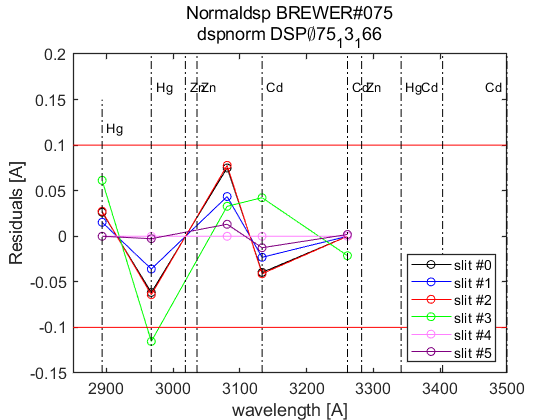 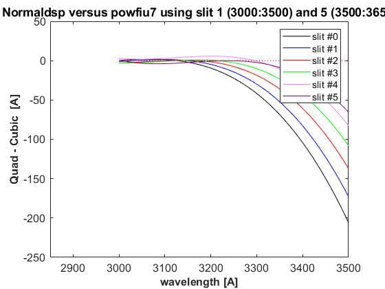
datefile =
736116
now:W1015215.075
now:W3015215.075
now:W7015215.075
now:W8015215.075
now:W1115215.075
now:W3115215.075
now:W7115215.075
now:W8115215.075
now:W9115215.075
now:W1215215.075
now:W3215215.075
now:W7215215.075
now:W8215215.075
now:W9215215.075
now:W3315215.075
now:W7315215.075
now:W8315215.075
now:W9315215.075
now:W3415215.075
now:W7415215.075
now:W8415215.075
now:W9415215.075
now:W3515215.075
now:W7515215.075
now:W8515215.075
now:W9515215.075
lines_dsp_15115__075
saving alldsp to DSP\075_15_152\alldsp_15115_075.075
saving normaldsp to DSP\075_15_152\dspnorm_15115_075.075 as brewer compatible file
Use polyval(pwl(2,:),wl) for calculating normal wavelengths
Saving ozonecoeffs to DSP\075_15_152\opos15115_075.075
286 WL(A) 3031.41 3062.43 3100.12 3134.56 3167.56 3199.58
Res(A) 11.19 11.03 10.92 11.17 11.12 10.90
O3abs(1/cm) 2.6171 1.7920 1.0064 0.6778 0.3750 0.2963 O3: 0.3461
Daumt O3abs(1/cm) 2.6239 1.7859 0.9983 0.6712 0.3684 0.2963 O3: 0.3559
So2abs(1/cm) 3.5571 5.4521 2.3691 1.9727 1.0469 0.6237
Bremen O3abs(1/cm) 2.6269 1.7895 1.0039 0.6809 0.3735 0.2975 O3: 0.3475
Nicolet 1e4*Rayabs(1/cm) 5054.2 4836.2 4587.2 4373.7 4181.1 4004.3 R: 9.2641
Bates(fix) 1e4*Rayabs(1/cm) 0.0 4870.0 4620.0 4410.0 4220.0 4040.0 R: -1.0000
Bodhaine 1e4*Rayabs(1/cm) 5050.7 4834.2 4586.7 4374.4 4182.6 4006.6 R: 8.8967
I0(mW m^-2nm^-1) 11722.02 9429.78 7323.45 4920.16 4070.70 3245.23 ETC: 1425
Ozone offset due to Rayleigh (RayCOeff/O3Coeff): -2.7 DU
Ozone offset due to Rayleigh (Bodhaine): -2.9 DU
Ratio Ozone for So2(A3)= 1.1650, So2/O3(A2)= 2.6188
O3 factor from Bass & Paur to Daumont = 0.9725
O3 factor from Bass & Paur to Bremen = 0.9961
287 WL(A) 3031.48 3062.50 3100.19 3134.63 3167.62 3199.65
Res(A) 11.19 11.03 10.92 11.17 11.12 10.90
O3abs(1/cm) 2.6143 1.7907 1.0061 0.6776 0.3750 0.2959 O3: 0.3452
Daumt O3abs(1/cm) 2.6213 1.7847 0.9979 0.6712 0.3683 0.2960 O3: 0.3552
So2abs(1/cm) 3.5390 5.4789 2.3759 1.9618 1.0481 0.6218
Bremen O3abs(1/cm) 2.6244 1.7882 1.0035 0.6808 0.3735 0.2972 O3: 0.3467
Nicolet 1e4*Rayabs(1/cm) 5053.7 4835.7 4586.7 4373.3 4180.7 4003.9 R: 9.2620
Bates(fix) 1e4*Rayabs(1/cm) 0.0 4870.0 4620.0 4410.0 4220.0 4040.0 R: -1.0000
Bodhaine 1e4*Rayabs(1/cm) 5050.2 4833.7 4586.2 4374.0 4182.2 4006.2 R: 8.8899
I0(mW m^-2nm^-1) 11716.06 9423.70 7300.34 4916.49 4061.43 3236.23 ETC: 1409
Ozone offset due to Rayleigh (RayCOeff/O3Coeff): -2.7 DU
Ozone offset due to Rayleigh (Bodhaine): -2.9 DU
Ratio Ozone for So2(A3)= 1.1624, So2/O3(A2)= 2.6381
O3 factor from Bass & Paur to Daumont = 0.9719
O3 factor from Bass & Paur to Bremen = 0.9957
288 WL(A) 3031.55 3062.57 3100.26 3134.70 3167.69 3199.71
Res(A) 11.19 11.03 10.92 11.17 11.12 10.90
O3abs(1/cm) 2.6116 1.7893 1.0058 0.6775 0.3750 0.2955 O3: 0.3443
Daumt O3abs(1/cm) 2.6187 1.7834 0.9976 0.6711 0.3683 0.2957 O3: 0.3545
So2abs(1/cm) 3.5208 5.5041 2.3829 1.9511 1.0493 0.6198
Bremen O3abs(1/cm) 2.6219 1.7868 1.0032 0.6807 0.3734 0.2969 O3: 0.3459
Nicolet 1e4*Rayabs(1/cm) 5053.2 4835.2 4586.3 4372.9 4180.3 4003.6 R: 9.2599
Bates(fix) 1e4*Rayabs(1/cm) 0.0 4870.0 4620.0 4410.0 4220.0 4040.0 R: -1.0000
Bodhaine 1e4*Rayabs(1/cm) 5049.7 4833.2 4585.8 4373.6 4181.9 4005.9 R: 8.8904
I0(mW m^-2nm^-1) 11710.09 9417.63 7277.35 4912.83 4052.19 3227.26 ETC: 1392
Ozone offset due to Rayleigh (RayCOeff/O3Coeff): -2.7 DU
Ozone offset due to Rayleigh (Bodhaine): -2.9 DU
Ratio Ozone for So2(A3)= 1.1597, So2/O3(A2)= 2.6564
O3 factor from Bass & Paur to Daumont = 0.9715
O3 factor from Bass & Paur to Bremen = 0.9954
289 WL(A) 3031.62 3062.64 3100.32 3134.76 3167.76 3199.78
Res(A) 11.19 11.03 10.92 11.17 11.12 10.90
O3abs(1/cm) 2.6090 1.7879 1.0056 0.6773 0.3750 0.2950 O3: 0.3434
Daumt O3abs(1/cm) 2.6161 1.7822 0.9973 0.6710 0.3683 0.2954 O3: 0.3537
So2abs(1/cm) 3.5027 5.5283 2.3898 1.9403 1.0504 0.6178
Bremen O3abs(1/cm) 2.6194 1.7855 1.0029 0.6805 0.3734 0.2965 O3: 0.3451
Nicolet 1e4*Rayabs(1/cm) 5052.7 4834.8 4585.9 4372.5 4179.9 4003.2 R: 9.2579
Bates(fix) 1e4*Rayabs(1/cm) 0.0 4870.0 4620.0 4410.0 4220.0 4040.0 R: -1.0000
Bodhaine 1e4*Rayabs(1/cm) 5049.2 4832.8 4585.4 4373.2 4181.5 4005.5 R: 8.8909
I0(mW m^-2nm^-1) 11704.14 9411.57 7254.48 4909.17 4042.97 3218.30 ETC: 1376
Ozone offset due to Rayleigh (RayCOeff/O3Coeff): -2.7 DU
Ozone offset due to Rayleigh (Bodhaine): -2.9 DU
Ratio Ozone for So2(A3)= 1.1568, So2/O3(A2)= 2.6740
O3 factor from Bass & Paur to Daumont = 0.9709
O3 factor from Bass & Paur to Bremen = 0.9949
290 WL(A) 3031.69 3062.71 3100.39 3134.83 3167.82 3199.84
Res(A) 11.19 11.03 10.92 11.17 11.11 10.90
O3abs(1/cm) 2.6065 1.7865 1.0053 0.6770 0.3751 0.2946 O3: 0.3424
Daumt O3abs(1/cm) 2.6136 1.7809 0.9969 0.6709 0.3683 0.2951 O3: 0.3529
So2abs(1/cm) 3.4849 5.5522 2.3969 1.9295 1.0516 0.6158
Bremen O3abs(1/cm) 2.6170 1.7841 1.0025 0.6804 0.3735 0.2962 O3: 0.3443
Nicolet 1e4*Rayabs(1/cm) 5052.2 4834.3 4585.4 4372.1 4179.5 4002.9 R: 9.2558
Bates(fix) 1e4*Rayabs(1/cm) 0.0 4870.0 4620.0 4410.0 4220.0 4040.0 R: -1.0000
Bodhaine 1e4*Rayabs(1/cm) 5048.7 4832.3 4584.9 4372.8 4181.1 4005.2 R: 8.8842
I0(mW m^-2nm^-1) 11698.20 9405.51 7231.73 4905.51 4033.77 3209.35 ETC: 1361
Ozone offset due to Rayleigh (RayCOeff/O3Coeff): -2.7 DU
Ozone offset due to Rayleigh (Bodhaine): -2.9 DU
Ratio Ozone for So2(A3)= 1.1539, So2/O3(A2)= 2.6917
O3 factor from Bass & Paur to Daumont = 0.9704
O3 factor from Bass & Paur to Bremen = 0.9945
291 WL(A) 3031.76 3062.78 3100.46 3134.90 3167.89 3199.91
Res(A) 11.19 11.03 10.92 11.17 11.11 10.90
O3abs(1/cm) 2.6041 1.7851 1.0050 0.6767 0.3751 0.2941 O3: 0.3414
Daumt O3abs(1/cm) 2.6110 1.7796 0.9966 0.6708 0.3683 0.2947 O3: 0.3520
So2abs(1/cm) 3.4689 5.5762 2.4042 1.9182 1.0528 0.6138
Bremen O3abs(1/cm) 2.6145 1.7828 1.0022 0.6802 0.3735 0.2958 O3: 0.3434
Nicolet 1e4*Rayabs(1/cm) 5051.7 4833.8 4585.0 4371.7 4179.2 4002.5 R: 9.2538
Bates(fix) 1e4*Rayabs(1/cm) 0.0 4870.0 4620.0 4410.0 4220.0 4040.0 R: -1.0000
Bodhaine 1e4*Rayabs(1/cm) 5048.2 4831.8 4584.5 4372.4 4180.7 4004.8 R: 8.8840
I0(mW m^-2nm^-1) 11692.26 9399.47 7209.10 4901.86 4024.59 3200.43 ETC: 1345
Ozone offset due to Rayleigh (RayCOeff/O3Coeff): -2.7 DU
Ozone offset due to Rayleigh (Bodhaine): -2.9 DU
Ratio Ozone for So2(A3)= 1.1509, So2/O3(A2)= 2.7096
O3 factor from Bass & Paur to Daumont = 0.9699
O3 factor from Bass & Paur to Bremen = 0.9942
292 WL(A) 3031.83 3062.85 3100.53 3134.97 3167.96 3199.97
Res(A) 11.19 11.03 10.92 11.17 11.11 10.90
O3abs(1/cm) 2.6017 1.7837 1.0048 0.6764 0.3751 0.2937 O3: 0.3405
Daumt O3abs(1/cm) 2.6085 1.7783 0.9963 0.6706 0.3683 0.2944 O3: 0.3511
So2abs(1/cm) 3.4531 5.5992 2.4119 1.9073 1.0539 0.6117
Bremen O3abs(1/cm) 2.6121 1.7814 1.0019 0.6800 0.3735 0.2955 O3: 0.3425
Nicolet 1e4*Rayabs(1/cm) 5051.2 4833.4 4584.5 4371.3 4178.8 4002.2 R: 9.2517
Bates(fix) 1e4*Rayabs(1/cm) 0.0 4870.0 4620.0 4410.0 4220.0 4040.0 R: -1.0000
Bodhaine 1e4*Rayabs(1/cm) 5047.8 4831.4 4584.1 4372.0 4180.4 4004.5 R: 8.8851
I0(mW m^-2nm^-1) 11686.33 9393.43 7195.30 4898.21 4015.42 3191.52 ETC: 1338
Ozone offset due to Rayleigh (RayCOeff/O3Coeff): -2.7 DU
Ozone offset due to Rayleigh (Bodhaine): -2.9 DU
Ratio Ozone for So2(A3)= 1.1480, So2/O3(A2)= 2.7267
O3 factor from Bass & Paur to Daumont = 0.9698
O3 factor from Bass & Paur to Bremen = 0.9943
293 WL(A) 3031.90 3062.91 3100.60 3135.03 3168.02 3200.04
Res(A) 11.19 11.03 10.92 11.17 11.11 10.90
O3abs(1/cm) 2.5993 1.7823 1.0045 0.6761 0.3751 0.2932 O3: 0.3397
Daumt O3abs(1/cm) 2.6061 1.7770 0.9960 0.6704 0.3683 0.2940 O3: 0.3502
So2abs(1/cm) 3.4373 5.6207 2.4196 1.8964 1.0550 0.6096
Bremen O3abs(1/cm) 2.6097 1.7799 1.0016 0.6798 0.3735 0.2951 O3: 0.3416
Nicolet 1e4*Rayabs(1/cm) 5050.7 4832.9 4584.1 4370.9 4178.4 4001.8 R: 9.2497
Bates(fix) 1e4*Rayabs(1/cm) 0.0 4870.0 4620.0 4410.0 4220.0 4040.0 R: -1.0000
Bodhaine 1e4*Rayabs(1/cm) 5047.3 4830.9 4583.6 4371.6 4180.0 4004.1 R: 8.8786
I0(mW m^-2nm^-1) 11680.41 9387.40 7181.98 4894.56 4006.28 3182.63 ETC: 1331
Ozone offset due to Rayleigh (RayCOeff/O3Coeff): -2.7 DU
Ozone offset due to Rayleigh (Bodhaine): -2.9 DU
Ratio Ozone for So2(A3)= 1.1451, So2/O3(A2)= 2.7422
O3 factor from Bass & Paur to Daumont = 0.9699
O3 factor from Bass & Paur to Bremen = 0.9944
294 WL(A) 3031.97 3062.98 3100.67 3135.10 3168.09 3200.11
Res(A) 11.19 11.03 10.92 11.17 11.11 10.89
O3abs(1/cm) 2.5968 1.7809 1.0042 0.6757 0.3752 0.2927 O3: 0.3386
Daumt O3abs(1/cm) 2.6036 1.7757 0.9956 0.6703 0.3684 0.2936 O3: 0.3492
So2abs(1/cm) 3.4218 5.6416 2.4274 1.8855 1.0562 0.6073
Bremen O3abs(1/cm) 2.6074 1.7785 1.0012 0.6795 0.3736 0.2947 O3: 0.3406
Nicolet 1e4*Rayabs(1/cm) 5050.2 4832.4 4583.7 4370.5 4178.0 4001.5 R: 9.2476
Bates(fix) 1e4*Rayabs(1/cm) 0.0 4870.0 4620.0 4410.0 4220.0 4040.0 R: -1.0000
Bodhaine 1e4*Rayabs(1/cm) 5046.8 4830.4 4583.2 4371.2 4179.6 4003.8 R: 8.8781
I0(mW m^-2nm^-1) 11674.50 9381.37 7169.01 4890.91 3997.15 3173.76 ETC: 1325
Ozone offset due to Rayleigh (RayCOeff/O3Coeff): -2.7 DU
Ozone offset due to Rayleigh (Bodhaine): -2.9 DU
Ratio Ozone for So2(A3)= 1.1419, So2/O3(A2)= 2.7579
O3 factor from Bass & Paur to Daumont = 0.9695
O3 factor from Bass & Paur to Bremen = 0.9942
295 WL(A) 3032.04 3063.05 3100.73 3135.17 3168.16 3200.17
Res(A) 11.19 11.03 10.92 11.17 11.11 10.89
O3abs(1/cm) 2.5943 1.7793 1.0039 0.6753 0.3752 0.2922 O3: 0.3375
Daumt O3abs(1/cm) 2.6012 1.7743 0.9953 0.6700 0.3684 0.2932 O3: 0.3482
So2abs(1/cm) 3.4078 5.6624 2.4351 1.8742 1.0573 0.6051
Bremen O3abs(1/cm) 2.6051 1.7771 1.0009 0.6793 0.3736 0.2943 O3: 0.3395
Nicolet 1e4*Rayabs(1/cm) 5049.7 4831.9 4583.2 4370.1 4177.7 4001.1 R: 9.2455
Bates(fix) 1e4*Rayabs(1/cm) 0.0 4870.0 4620.0 4410.0 4220.0 4040.0 R: -1.0000
Bodhaine 1e4*Rayabs(1/cm) 5046.3 4830.0 4582.8 4370.8 4179.2 4003.4 R: 8.8793
I0(mW m^-2nm^-1) 11668.59 9375.36 7155.28 4887.27 3988.04 3164.91 ETC: 1318
Ozone offset due to Rayleigh (RayCOeff/O3Coeff): -2.7 DU
Ozone offset due to Rayleigh (Bodhaine): -2.9 DU
Ratio Ozone for So2(A3)= 1.1384, So2/O3(A2)= 2.7743
O3 factor from Bass & Paur to Daumont = 0.9691
O3 factor from Bass & Paur to Bremen = 0.9939
296 WL(A) 3032.11 3063.12 3100.80 3135.23 3168.22 3200.24
Res(A) 11.19 11.03 10.92 11.17 11.11 10.89
O3abs(1/cm) 2.5917 1.7777 1.0036 0.6750 0.3753 0.2917 O3: 0.3363
Daumt O3abs(1/cm) 2.5988 1.7729 0.9950 0.6698 0.3685 0.2928 O3: 0.3472
So2abs(1/cm) 3.3943 5.6831 2.4436 1.8631 1.0584 0.6030
Bremen O3abs(1/cm) 2.6027 1.7756 1.0006 0.6790 0.3737 0.2938 O3: 0.3385
Nicolet 1e4*Rayabs(1/cm) 5049.2 4831.5 4582.8 4369.7 4177.3 4000.8 R: 9.2435
Bates(fix) 1e4*Rayabs(1/cm) 0.0 4870.0 4620.0 4410.0 4220.0 4040.0 R: -1.0000
Bodhaine 1e4*Rayabs(1/cm) 5045.8 4829.5 4582.3 4370.4 4178.9 4003.1 R: 8.8729
I0(mW m^-2nm^-1) 11662.69 9369.35 7139.63 4883.63 3978.95 3156.07 ETC: 1309
Ozone offset due to Rayleigh (RayCOeff/O3Coeff): -2.7 DU
Ozone offset due to Rayleigh (Bodhaine): -2.9 DU
Ratio Ozone for So2(A3)= 1.1349, So2/O3(A2)= 2.7909
O3 factor from Bass & Paur to Daumont = 0.9686
O3 factor from Bass & Paur to Bremen = 0.9936
saving powfiu7 to DSP\075_15_152\dsp_15115_075.075
freecoef =
4
freecoef =
9
freecoef =
9
freecoef =
9
freecoef =
9
freecoef =
9
freecoef =
9
freecoef =
9
freecoef =
9
freecoef =
9
saving data to file:DSP\075_15_152\dsp_15115_075.075
Use brstps2 to calculate steps and wavelengths
Saving ozonecoeffs to DSP\075_15_152\opos_pow7_15115_075.075
286 WL(A) 3031.38 3062.46 3100.07 3134.53 3167.51 3199.54
Res(A) 11.19 11.01 10.91 11.16 11.11 10.90
O3abs(1/cm) 2.6183 1.7915 1.0066 0.6779 0.3750 0.2965 O3: 0.3466
Daumt O3abs(1/cm) 2.6251 1.7854 0.9985 0.6713 0.3684 0.2964 O3: 0.3564
So2abs(1/cm) 3.5662 5.4652 2.3645 1.9771 1.0461 0.6249
Bremen O3abs(1/cm) 2.6282 1.7889 1.0041 0.6809 0.3735 0.2977 O3: 0.3479
Nicolet 1e4*Rayabs(1/cm) 5054.5 4836.0 4587.5 4373.9 4181.3 4004.5 R: 9.2788
Bates(fix) 1e4*Rayabs(1/cm) 0.0 4870.0 4620.0 4410.0 4220.0 4040.0 R: -1.0000
Bodhaine 1e4*Rayabs(1/cm) 5051.0 4834.0 4587.0 4374.6 4182.9 4006.8 R: 8.9073
I0(mW m^-2nm^-1) 11724.89 9427.07 7340.41 4921.58 4077.40 3250.13 ETC: 1435
Ozone offset due to Rayleigh (RayCOeff/O3Coeff): -2.7 DU
Ozone offset due to Rayleigh (Bodhaine): -2.9 DU
Ratio Ozone for So2(A3)= 1.1651, So2/O3(A2)= 2.6362
O3 factor from Bass & Paur to Daumont = 0.9728
O3 factor from Bass & Paur to Bremen = 0.9963
287 WL(A) 3031.45 3062.53 3100.14 3134.60 3167.58 3199.60
Res(A) 11.19 11.01 10.91 11.16 11.11 10.90
O3abs(1/cm) 2.6156 1.7901 1.0063 0.6777 0.3750 0.2961 O3: 0.3459
Daumt O3abs(1/cm) 2.6225 1.7841 0.9982 0.6712 0.3683 0.2962 O3: 0.3557
So2abs(1/cm) 3.5476 5.4913 2.3708 1.9661 1.0473 0.6230
Bremen O3abs(1/cm) 2.6256 1.7876 1.0038 0.6808 0.3735 0.2974 O3: 0.3472
Nicolet 1e4*Rayabs(1/cm) 5054.0 4835.5 4587.0 4373.5 4180.9 4004.2 R: 9.2766
Bates(fix) 1e4*Rayabs(1/cm) 0.0 4870.0 4620.0 4410.0 4220.0 4040.0 R: -1.0000
Bodhaine 1e4*Rayabs(1/cm) 5050.5 4833.5 4586.5 4374.2 4182.5 4006.5 R: 8.9081
I0(mW m^-2nm^-1) 11718.92 9420.99 7317.16 4917.91 4068.12 3242.09 ETC: 1420
Ozone offset due to Rayleigh (RayCOeff/O3Coeff): -2.7 DU
Ozone offset due to Rayleigh (Bodhaine): -2.9 DU
Ratio Ozone for So2(A3)= 1.1626, So2/O3(A2)= 2.6548
O3 factor from Bass & Paur to Daumont = 0.9723
O3 factor from Bass & Paur to Bremen = 0.9960
288 WL(A) 3031.52 3062.60 3100.21 3134.67 3167.64 3199.67
Res(A) 11.19 11.01 10.91 11.16 11.11 10.90
O3abs(1/cm) 2.6129 1.7887 1.0061 0.6776 0.3750 0.2957 O3: 0.3450
Daumt O3abs(1/cm) 2.6199 1.7829 0.9978 0.6712 0.3683 0.2959 O3: 0.3550
So2abs(1/cm) 3.5295 5.5160 2.3777 1.9553 1.0484 0.6211
Bremen O3abs(1/cm) 2.6231 1.7863 1.0034 0.6807 0.3734 0.2971 O3: 0.3465
Nicolet 1e4*Rayabs(1/cm) 5053.5 4835.0 4586.6 4373.1 4180.6 4003.8 R: 9.2744
Bates(fix) 1e4*Rayabs(1/cm) 0.0 4870.0 4620.0 4410.0 4220.0 4040.0 R: -1.0000
Bodhaine 1e4*Rayabs(1/cm) 5050.0 4833.0 4586.1 4373.8 4182.1 4006.1 R: 8.9046
I0(mW m^-2nm^-1) 11712.95 9414.92 7294.04 4914.24 4058.86 3233.10 ETC: 1404
Ozone offset due to Rayleigh (RayCOeff/O3Coeff): -2.7 DU
Ozone offset due to Rayleigh (Bodhaine): -2.9 DU
Ratio Ozone for So2(A3)= 1.1600, So2/O3(A2)= 2.6725
O3 factor from Bass & Paur to Daumont = 0.9718
O3 factor from Bass & Paur to Bremen = 0.9956
289 WL(A) 3031.59 3062.67 3100.28 3134.74 3167.71 3199.74
Res(A) 11.19 11.01 10.91 11.16 11.11 10.90
O3abs(1/cm) 2.6102 1.7873 1.0058 0.6774 0.3750 0.2953 O3: 0.3441
Daumt O3abs(1/cm) 2.6173 1.7816 0.9975 0.6711 0.3683 0.2956 O3: 0.3542
So2abs(1/cm) 3.5113 5.5400 2.3847 1.9446 1.0496 0.6191
Bremen O3abs(1/cm) 2.6206 1.7849 1.0031 0.6806 0.3734 0.2968 O3: 0.3457
Nicolet 1e4*Rayabs(1/cm) 5053.0 4834.6 4586.2 4372.7 4180.2 4003.5 R: 9.2722
Bates(fix) 1e4*Rayabs(1/cm) 0.0 4870.0 4620.0 4410.0 4220.0 4040.0 R: -1.0000
Bodhaine 1e4*Rayabs(1/cm) 5049.5 4832.6 4585.7 4373.4 4181.8 4005.8 R: 8.9012
I0(mW m^-2nm^-1) 11707.00 9408.85 7271.04 4910.58 4049.62 3224.12 ETC: 1388
Ozone offset due to Rayleigh (RayCOeff/O3Coeff): -2.7 DU
Ozone offset due to Rayleigh (Bodhaine): -2.9 DU
Ratio Ozone for So2(A3)= 1.1573, So2/O3(A2)= 2.6898
O3 factor from Bass & Paur to Daumont = 0.9713
O3 factor from Bass & Paur to Bremen = 0.9953
290 WL(A) 3031.66 3062.74 3100.34 3134.80 3167.78 3199.80
Res(A) 11.19 11.01 10.91 11.16 11.11 10.89
O3abs(1/cm) 2.6077 1.7860 1.0055 0.6771 0.3750 0.2949 O3: 0.3431
Daumt O3abs(1/cm) 2.6148 1.7804 0.9972 0.6710 0.3683 0.2953 O3: 0.3535
So2abs(1/cm) 3.4933 5.5640 2.3917 1.9339 1.0508 0.6171
Bremen O3abs(1/cm) 2.6181 1.7836 1.0028 0.6805 0.3734 0.2964 O3: 0.3449
Nicolet 1e4*Rayabs(1/cm) 5052.5 4834.1 4585.7 4372.3 4179.8 4003.1 R: 9.2700
Bates(fix) 1e4*Rayabs(1/cm) 0.0 4870.0 4620.0 4410.0 4220.0 4040.0 R: -1.0000
Bodhaine 1e4*Rayabs(1/cm) 5049.0 4832.1 4585.2 4373.0 4181.4 4005.4 R: 8.9016
I0(mW m^-2nm^-1) 11701.05 9402.79 7248.15 4906.91 4040.40 3215.17 ETC: 1372
Ozone offset due to Rayleigh (RayCOeff/O3Coeff): -2.7 DU
Ozone offset due to Rayleigh (Bodhaine): -2.9 DU
Ratio Ozone for So2(A3)= 1.1544, So2/O3(A2)= 2.7075
O3 factor from Bass & Paur to Daumont = 0.9708
O3 factor from Bass & Paur to Bremen = 0.9948
291 WL(A) 3031.73 3062.81 3100.41 3134.87 3167.84 3199.87
Res(A) 11.19 11.01 10.91 11.16 11.11 10.89
O3abs(1/cm) 2.6053 1.7845 1.0052 0.6769 0.3751 0.2944 O3: 0.3421
Daumt O3abs(1/cm) 2.6122 1.7791 0.9969 0.6709 0.3683 0.2949 O3: 0.3526
So2abs(1/cm) 3.4765 5.5880 2.3987 1.9226 1.0519 0.6151
Bremen O3abs(1/cm) 2.6157 1.7822 1.0024 0.6803 0.3734 0.2961 O3: 0.3441
Nicolet 1e4*Rayabs(1/cm) 5052.0 4833.6 4585.3 4371.9 4179.4 4002.8 R: 9.2678
Bates(fix) 1e4*Rayabs(1/cm) 0.0 4870.0 4620.0 4410.0 4220.0 4040.0 R: -1.0000
Bodhaine 1e4*Rayabs(1/cm) 5048.5 4831.6 4584.8 4372.5 4181.0 4005.1 R: 8.8985
I0(mW m^-2nm^-1) 11695.11 9396.74 7225.39 4903.25 4031.20 3206.23 ETC: 1356
Ozone offset due to Rayleigh (RayCOeff/O3Coeff): -2.7 DU
Ozone offset due to Rayleigh (Bodhaine): -2.9 DU
Ratio Ozone for So2(A3)= 1.1514, So2/O3(A2)= 2.7254
O3 factor from Bass & Paur to Daumont = 0.9702
O3 factor from Bass & Paur to Bremen = 0.9944
292 WL(A) 3031.80 3062.88 3100.48 3134.94 3167.91 3199.93
Res(A) 11.19 11.01 10.91 11.16 11.11 10.89
O3abs(1/cm) 2.6029 1.7831 1.0049 0.6766 0.3751 0.2940 O3: 0.3412
Daumt O3abs(1/cm) 2.6097 1.7778 0.9965 0.6707 0.3683 0.2946 O3: 0.3518
So2abs(1/cm) 3.4606 5.6099 2.4062 1.9117 1.0531 0.6131
Bremen O3abs(1/cm) 2.6133 1.7808 1.0021 0.6801 0.3735 0.2957 O3: 0.3432
Nicolet 1e4*Rayabs(1/cm) 5051.5 4833.1 4584.9 4371.5 4179.1 4002.4 R: 9.2656
Bates(fix) 1e4*Rayabs(1/cm) 0.0 4870.0 4620.0 4410.0 4220.0 4040.0 R: -1.0000
Bodhaine 1e4*Rayabs(1/cm) 5048.0 4831.2 4584.4 4372.1 4180.6 4004.7 R: 8.8950
I0(mW m^-2nm^-1) 11689.17 9390.70 7206.01 4899.60 4022.02 3197.31 ETC: 1343
Ozone offset due to Rayleigh (RayCOeff/O3Coeff): -2.7 DU
Ozone offset due to Rayleigh (Bodhaine): -2.9 DU
Ratio Ozone for So2(A3)= 1.1484, So2/O3(A2)= 2.7418
O3 factor from Bass & Paur to Daumont = 0.9699
O3 factor from Bass & Paur to Bremen = 0.9942
293 WL(A) 3031.87 3062.94 3100.55 3135.01 3167.97 3200.00
Res(A) 11.19 11.01 10.91 11.16 11.11 10.89
O3abs(1/cm) 2.6005 1.7817 1.0047 0.6762 0.3751 0.2935 O3: 0.3403
Daumt O3abs(1/cm) 2.6073 1.7764 0.9962 0.6705 0.3683 0.2942 O3: 0.3509
So2abs(1/cm) 3.4448 5.6310 2.4139 1.9008 1.0542 0.6109
Bremen O3abs(1/cm) 2.6109 1.7794 1.0018 0.6799 0.3735 0.2953 O3: 0.3422
Nicolet 1e4*Rayabs(1/cm) 5050.9 4832.7 4584.4 4371.1 4178.7 4002.1 R: 9.2634
Bates(fix) 1e4*Rayabs(1/cm) 0.0 4870.0 4620.0 4410.0 4220.0 4040.0 R: -1.0000
Bodhaine 1e4*Rayabs(1/cm) 5047.5 4830.7 4583.9 4371.7 4180.3 4004.4 R: 8.8947
I0(mW m^-2nm^-1) 11683.25 9384.66 7192.40 4895.94 4012.85 3188.41 ETC: 1336
Ozone offset due to Rayleigh (RayCOeff/O3Coeff): -2.7 DU
Ozone offset due to Rayleigh (Bodhaine): -2.9 DU
Ratio Ozone for So2(A3)= 1.1455, So2/O3(A2)= 2.7572
O3 factor from Bass & Paur to Daumont = 0.9699
O3 factor from Bass & Paur to Bremen = 0.9944
294 WL(A) 3031.94 3063.01 3100.62 3135.07 3168.04 3200.06
Res(A) 11.19 11.01 10.91 11.16 11.11 10.89
O3abs(1/cm) 2.5980 1.7802 1.0044 0.6759 0.3751 0.2931 O3: 0.3394
Daumt O3abs(1/cm) 2.6048 1.7751 0.9959 0.6704 0.3683 0.2939 O3: 0.3499
So2abs(1/cm) 3.4292 5.6519 2.4216 1.8898 1.0554 0.6088
Bremen O3abs(1/cm) 2.6085 1.7779 1.0015 0.6797 0.3735 0.2950 O3: 0.3413
Nicolet 1e4*Rayabs(1/cm) 5050.4 4832.2 4584.0 4370.7 4178.3 4001.7 R: 9.2612
Bates(fix) 1e4*Rayabs(1/cm) 0.0 4870.0 4620.0 4410.0 4220.0 4040.0 R: -1.0000
Bodhaine 1e4*Rayabs(1/cm) 5047.0 4830.2 4583.5 4371.3 4179.9 4004.0 R: 8.8924
I0(mW m^-2nm^-1) 11677.33 9378.64 7179.15 4892.29 4003.71 3179.53 ETC: 1330
Ozone offset due to Rayleigh (RayCOeff/O3Coeff): -2.7 DU
Ozone offset due to Rayleigh (Bodhaine): -2.9 DU
Ratio Ozone for So2(A3)= 1.1425, So2/O3(A2)= 2.7725
O3 factor from Bass & Paur to Daumont = 0.9699
O3 factor from Bass & Paur to Bremen = 0.9945
295 WL(A) 3032.01 3063.08 3100.68 3135.14 3168.11 3200.13
Res(A) 11.19 11.01 10.91 11.16 11.11 10.89
O3abs(1/cm) 2.5955 1.7787 1.0041 0.6755 0.3752 0.2926 O3: 0.3383
Daumt O3abs(1/cm) 2.6024 1.7737 0.9956 0.6701 0.3684 0.2935 O3: 0.3490
So2abs(1/cm) 3.4141 5.6728 2.4294 1.8788 1.0565 0.6066
Bremen O3abs(1/cm) 2.6062 1.7765 1.0011 0.6794 0.3736 0.2945 O3: 0.3403
Nicolet 1e4*Rayabs(1/cm) 5049.9 4831.7 4583.6 4370.3 4177.9 4001.4 R: 9.2590
Bates(fix) 1e4*Rayabs(1/cm) 0.0 4870.0 4620.0 4410.0 4220.0 4040.0 R: -1.0000
Bodhaine 1e4*Rayabs(1/cm) 5046.5 4829.8 4583.1 4370.9 4179.5 4003.6 R: 8.8889
I0(mW m^-2nm^-1) 11671.42 9372.62 7166.25 4888.64 3994.58 3170.66 ETC: 1324
Ozone offset due to Rayleigh (RayCOeff/O3Coeff): -2.7 DU
Ozone offset due to Rayleigh (Bodhaine): -2.9 DU
Ratio Ozone for So2(A3)= 1.1390, So2/O3(A2)= 2.7888
O3 factor from Bass & Paur to Daumont = 0.9694
O3 factor from Bass & Paur to Bremen = 0.9941
296 WL(A) 3032.08 3063.15 3100.75 3135.21 3168.17 3200.19
Res(A) 11.19 11.01 10.91 11.16 11.11 10.89
O3abs(1/cm) 2.5929 1.7771 1.0038 0.6751 0.3753 0.2921 O3: 0.3372
Daumt O3abs(1/cm) 2.6000 1.7724 0.9952 0.6699 0.3684 0.2931 O3: 0.3480
So2abs(1/cm) 3.4007 5.6923 2.4373 1.8675 1.0576 0.6044
Bremen O3abs(1/cm) 2.6038 1.7750 1.0008 0.6791 0.3736 0.2941 O3: 0.3393
Nicolet 1e4*Rayabs(1/cm) 5049.4 4831.3 4583.1 4369.9 4177.6 4001.0 R: 9.2568
Bates(fix) 1e4*Rayabs(1/cm) 0.0 4870.0 4620.0 4410.0 4220.0 4040.0 R: -1.0000
Bodhaine 1e4*Rayabs(1/cm) 5046.0 4829.3 4582.6 4370.5 4179.1 4003.3 R: 8.8879
I0(mW m^-2nm^-1) 11665.52 9366.61 7151.63 4884.99 3985.47 3161.81 ETC: 1316
Ozone offset due to Rayleigh (RayCOeff/O3Coeff): -2.7 DU
Ozone offset due to Rayleigh (Bodhaine): -2.9 DU
Ratio Ozone for So2(A3)= 1.1356, So2/O3(A2)= 2.8041
O3 factor from Bass & Paur to Daumont = 0.9690
O3 factor from Bass & Paur to Bremen = 0.9939
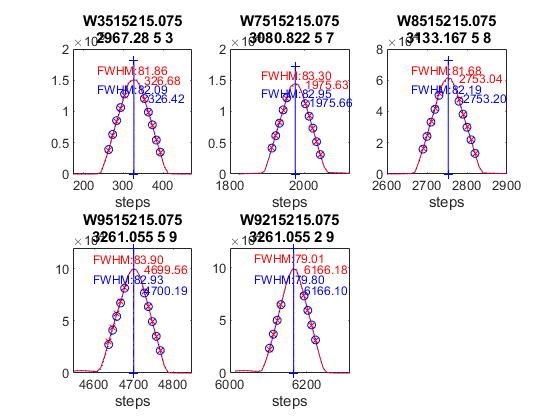 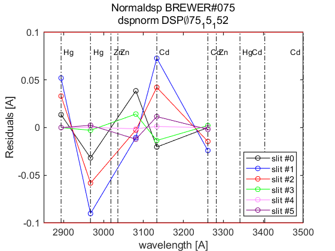 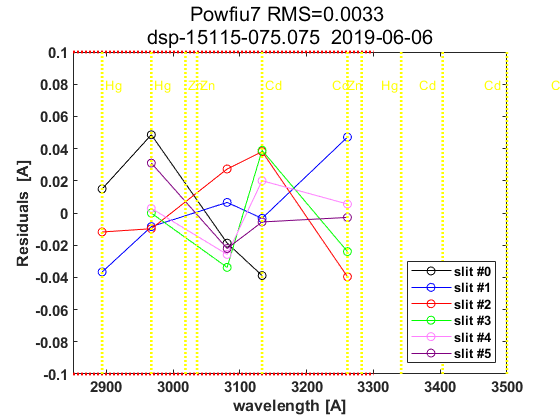
datefile =
736848
now:W1015317.075
now:W3015317.075
now:W7015317.075
now:W8015317.075
now:W1115317.075
now:W3115317.075
now:W7115317.075
now:W8115317.075
now:W9115317.075
now:W1215317.075
now:W3215317.075
now:W7215317.075
now:W8215317.075
now:W9215317.075
now:W3315317.075
now:W7315317.075
now:W8315317.075
now:W9315317.075
now:W3415317.075
now:W7415317.075
now:W8415317.075
now:W9415317.075
now:W3515317.075
now:W7515317.075
now:W8515317.075
now:W9515317.075
lines_dsp_15217__075
saving alldsp to DSP\075_17_153\alldsp_15217_075.075
saving normaldsp to DSP\075_17_153\dspnorm_15217_075.075 as brewer compatible file
Use polyval(pwl(2,:),wl) for calculating normal wavelengths
Saving ozonecoeffs to DSP\075_17_153\opos15217_075.075
286 WL(A) 3031.58 3062.62 3100.31 3134.80 3167.75 3199.81
Res(A) 11.20 11.02 10.89 11.21 11.13 10.93
O3abs(1/cm) 2.6107 1.7883 1.0056 0.6770 0.3751 0.2947 O3: 0.3430
Daumt O3abs(1/cm) 2.6178 1.7825 0.9973 0.6709 0.3683 0.2951 O3: 0.3534
So2abs(1/cm) 3.5149 5.5230 2.3879 1.9348 1.0504 0.6165
Bremen O3abs(1/cm) 2.6210 1.7859 1.0029 0.6803 0.3735 0.2963 O3: 0.3448
Nicolet 1e4*Rayabs(1/cm) 5053.0 4834.9 4585.9 4372.3 4179.9 4003.0 R: 9.0808
Bates(fix) 1e4*Rayabs(1/cm) 0.0 4870.0 4620.0 4410.0 4220.0 4040.0 R: -1.0000
Bodhaine 1e4*Rayabs(1/cm) 5049.6 4832.9 4585.5 4373.0 4181.5 4005.3 R: 8.7131
I0(mW m^-2nm^-1) 11707.90 9413.07 7260.02 4907.51 4043.38 3213.40 ETC: 1374
Ozone offset due to Rayleigh (RayCOeff/O3Coeff): -2.6 DU
Ozone offset due to Rayleigh (Bodhaine): -2.8 DU
Ratio Ozone for So2(A3)= 1.1561, So2/O3(A2)= 2.6678
O3 factor from Bass & Paur to Daumont = 0.9707
O3 factor from Bass & Paur to Bremen = 0.9948
287 WL(A) 3031.65 3062.69 3100.38 3134.86 3167.82 3199.88
Res(A) 11.20 11.02 10.89 11.21 11.13 10.93
O3abs(1/cm) 2.6081 1.7869 1.0053 0.6768 0.3751 0.2943 O3: 0.3420
Daumt O3abs(1/cm) 2.6152 1.7813 0.9970 0.6707 0.3683 0.2948 O3: 0.3525
So2abs(1/cm) 3.4968 5.5471 2.3950 1.9236 1.0516 0.6145
Bremen O3abs(1/cm) 2.6186 1.7845 1.0026 0.6802 0.3735 0.2959 O3: 0.3440
Nicolet 1e4*Rayabs(1/cm) 5052.5 4834.4 4585.5 4371.9 4179.6 4002.7 R: 9.0788
Bates(fix) 1e4*Rayabs(1/cm) 0.0 4870.0 4620.0 4410.0 4220.0 4040.0 R: -1.0000
Bodhaine 1e4*Rayabs(1/cm) 5049.1 4832.4 4585.0 4372.6 4181.1 4005.0 R: 8.7066
I0(mW m^-2nm^-1) 11701.96 9407.00 7237.05 4903.89 4034.20 3204.54 ETC: 1358
Ozone offset due to Rayleigh (RayCOeff/O3Coeff): -2.7 DU
Ozone offset due to Rayleigh (Bodhaine): -2.8 DU
Ratio Ozone for So2(A3)= 1.1532, So2/O3(A2)= 2.6856
O3 factor from Bass & Paur to Daumont = 0.9702
O3 factor from Bass & Paur to Bremen = 0.9943
288 WL(A) 3031.72 3062.76 3100.45 3134.93 3167.89 3199.95
Res(A) 11.20 11.02 10.89 11.21 11.13 10.93
O3abs(1/cm) 2.6057 1.7855 1.0051 0.6764 0.3751 0.2938 O3: 0.3411
Daumt O3abs(1/cm) 2.6127 1.7800 0.9967 0.6706 0.3683 0.2944 O3: 0.3517
So2abs(1/cm) 3.4795 5.5711 2.4021 1.9125 1.0527 0.6125
Bremen O3abs(1/cm) 2.6161 1.7831 1.0023 0.6800 0.3735 0.2956 O3: 0.3431
Nicolet 1e4*Rayabs(1/cm) 5052.0 4833.9 4585.1 4371.5 4179.2 4002.3 R: 9.0767
Bates(fix) 1e4*Rayabs(1/cm) 0.0 4870.0 4620.0 4410.0 4220.0 4040.0 R: -1.0000
Bodhaine 1e4*Rayabs(1/cm) 5048.6 4832.0 4584.6 4372.2 4180.7 4004.6 R: 8.7089
I0(mW m^-2nm^-1) 11696.02 9400.93 7214.32 4900.27 4025.03 3195.70 ETC: 1342
Ozone offset due to Rayleigh (RayCOeff/O3Coeff): -2.7 DU
Ozone offset due to Rayleigh (Bodhaine): -2.8 DU
Ratio Ozone for So2(A3)= 1.1502, So2/O3(A2)= 2.7035
O3 factor from Bass & Paur to Daumont = 0.9698
O3 factor from Bass & Paur to Bremen = 0.9941
289 WL(A) 3031.79 3062.83 3100.52 3135.00 3167.95 3200.01
Res(A) 11.20 11.02 10.89 11.21 11.13 10.93
O3abs(1/cm) 2.6033 1.7841 1.0048 0.6761 0.3751 0.2934 O3: 0.3402
Daumt O3abs(1/cm) 2.6102 1.7787 0.9964 0.6704 0.3683 0.2941 O3: 0.3508
So2abs(1/cm) 3.4637 5.5945 2.4098 1.9017 1.0538 0.6104
Bremen O3abs(1/cm) 2.6137 1.7817 1.0020 0.6798 0.3735 0.2952 O3: 0.3422
Nicolet 1e4*Rayabs(1/cm) 5051.5 4833.5 4584.6 4371.1 4178.8 4002.0 R: 9.0747
Bates(fix) 1e4*Rayabs(1/cm) 0.0 4870.0 4620.0 4410.0 4220.0 4040.0 R: -1.0000
Bodhaine 1e4*Rayabs(1/cm) 5048.1 4831.5 4584.2 4371.8 4180.4 4004.3 R: 8.7071
I0(mW m^-2nm^-1) 11690.09 9394.88 7200.45 4896.66 4015.89 3186.88 ETC: 1335
Ozone offset due to Rayleigh (RayCOeff/O3Coeff): -2.7 DU
Ozone offset due to Rayleigh (Bodhaine): -2.9 DU
Ratio Ozone for So2(A3)= 1.1473, So2/O3(A2)= 2.7207
O3 factor from Bass & Paur to Daumont = 0.9698
O3 factor from Bass & Paur to Bremen = 0.9943
290 WL(A) 3031.86 3062.90 3100.58 3135.07 3168.02 3200.08
Res(A) 11.20 11.02 10.89 11.21 11.13 10.93
O3abs(1/cm) 2.6009 1.7827 1.0046 0.6758 0.3752 0.2929 O3: 0.3393
Daumt O3abs(1/cm) 2.6077 1.7774 0.9960 0.6702 0.3683 0.2937 O3: 0.3499
So2abs(1/cm) 3.4479 5.6164 2.4176 1.8909 1.0550 0.6082
Bremen O3abs(1/cm) 2.6113 1.7803 1.0016 0.6795 0.3735 0.2948 O3: 0.3412
Nicolet 1e4*Rayabs(1/cm) 5051.0 4833.0 4584.2 4370.7 4178.4 4001.6 R: 9.0727
Bates(fix) 1e4*Rayabs(1/cm) 0.0 4870.0 4620.0 4410.0 4220.0 4040.0 R: -1.0000
Bodhaine 1e4*Rayabs(1/cm) 5047.6 4831.0 4583.7 4371.4 4180.0 4003.9 R: 8.7008
I0(mW m^-2nm^-1) 11684.17 9388.83 7186.94 4893.04 4006.77 3178.07 ETC: 1328
Ozone offset due to Rayleigh (RayCOeff/O3Coeff): -2.7 DU
Ozone offset due to Rayleigh (Bodhaine): -2.9 DU
Ratio Ozone for So2(A3)= 1.1443, So2/O3(A2)= 2.7368
O3 factor from Bass & Paur to Daumont = 0.9697
O3 factor from Bass & Paur to Bremen = 0.9943
291 WL(A) 3031.93 3062.97 3100.65 3135.13 3168.09 3200.14
Res(A) 11.20 11.02 10.89 11.21 11.13 10.93
O3abs(1/cm) 2.5985 1.7812 1.0043 0.6754 0.3752 0.2924 O3: 0.3382
Daumt O3abs(1/cm) 2.6052 1.7760 0.9957 0.6700 0.3684 0.2933 O3: 0.3489
So2abs(1/cm) 3.4322 5.6373 2.4253 1.8797 1.0561 0.6060
Bremen O3abs(1/cm) 2.6089 1.7789 1.0013 0.6793 0.3736 0.2944 O3: 0.3402
Nicolet 1e4*Rayabs(1/cm) 5050.5 4832.5 4583.8 4370.3 4178.0 4001.3 R: 9.0707
Bates(fix) 1e4*Rayabs(1/cm) 0.0 4870.0 4620.0 4410.0 4220.0 4040.0 R: -1.0000
Bodhaine 1e4*Rayabs(1/cm) 5047.1 4830.5 4583.3 4371.0 4179.6 4003.6 R: 8.7040
I0(mW m^-2nm^-1) 11678.25 9382.80 7173.79 4889.43 3997.66 3169.28 ETC: 1322
Ozone offset due to Rayleigh (RayCOeff/O3Coeff): -2.7 DU
Ozone offset due to Rayleigh (Bodhaine): -2.9 DU
Ratio Ozone for So2(A3)= 1.1410, So2/O3(A2)= 2.7526
O3 factor from Bass & Paur to Daumont = 0.9693
O3 factor from Bass & Paur to Bremen = 0.9940
292 WL(A) 3032.00 3063.04 3100.72 3135.20 3168.15 3200.21
Res(A) 11.20 11.02 10.89 11.21 11.13 10.93
O3abs(1/cm) 2.5959 1.7797 1.0040 0.6750 0.3753 0.2919 O3: 0.3371
Daumt O3abs(1/cm) 2.6028 1.7747 0.9954 0.6698 0.3684 0.2929 O3: 0.3479
So2abs(1/cm) 3.4169 5.6582 2.4332 1.8684 1.0572 0.6038
Bremen O3abs(1/cm) 2.6066 1.7775 1.0010 0.6790 0.3736 0.2940 O3: 0.3392
Nicolet 1e4*Rayabs(1/cm) 5050.0 4832.1 4583.3 4369.9 4177.7 4000.9 R: 9.0687
Bates(fix) 1e4*Rayabs(1/cm) 0.0 4870.0 4620.0 4410.0 4220.0 4040.0 R: -1.0000
Bodhaine 1e4*Rayabs(1/cm) 5046.6 4830.1 4582.9 4370.6 4179.2 4003.2 R: 8.7012
I0(mW m^-2nm^-1) 11672.35 9376.77 7160.43 4885.82 3988.57 3160.51 ETC: 1316
Ozone offset due to Rayleigh (RayCOeff/O3Coeff): -2.7 DU
Ozone offset due to Rayleigh (Bodhaine): -2.9 DU
Ratio Ozone for So2(A3)= 1.1376, So2/O3(A2)= 2.7690
O3 factor from Bass & Paur to Daumont = 0.9689
O3 factor from Bass & Paur to Bremen = 0.9938
293 WL(A) 3032.06 3063.10 3100.79 3135.27 3168.22 3200.27
Res(A) 11.20 11.02 10.89 11.21 11.13 10.93
O3abs(1/cm) 2.5934 1.7782 1.0037 0.6746 0.3753 0.2913 O3: 0.3359
Daumt O3abs(1/cm) 2.6004 1.7733 0.9951 0.6695 0.3685 0.2925 O3: 0.3468
So2abs(1/cm) 3.4034 5.6791 2.4414 1.8575 1.0583 0.6016
Bremen O3abs(1/cm) 2.6042 1.7760 1.0007 0.6787 0.3737 0.2935 O3: 0.3381
Nicolet 1e4*Rayabs(1/cm) 5049.5 4831.6 4582.9 4369.5 4177.3 4000.6 R: 9.0667
Bates(fix) 1e4*Rayabs(1/cm) 0.0 4870.0 4620.0 4410.0 4220.0 4040.0 R: -1.0000
Bodhaine 1e4*Rayabs(1/cm) 5046.1 4829.6 4582.4 4370.2 4178.9 4002.9 R: 8.6950
I0(mW m^-2nm^-1) 11666.45 9370.74 7144.67 4882.22 3979.50 3151.76 ETC: 1307
Ozone offset due to Rayleigh (RayCOeff/O3Coeff): -2.7 DU
Ozone offset due to Rayleigh (Bodhaine): -2.9 DU
Ratio Ozone for So2(A3)= 1.1340, So2/O3(A2)= 2.7858
O3 factor from Bass & Paur to Daumont = 0.9684
O3 factor from Bass & Paur to Bremen = 0.9934
294 WL(A) 3032.13 3063.17 3100.86 3135.34 3168.29 3200.34
Res(A) 11.20 11.02 10.89 11.21 11.13 10.93
O3abs(1/cm) 2.5910 1.7766 1.0034 0.6742 0.3754 0.2908 O3: 0.3346
Daumt O3abs(1/cm) 2.5980 1.7719 0.9947 0.6693 0.3685 0.2920 O3: 0.3457
So2abs(1/cm) 3.3900 5.6980 2.4499 1.8466 1.0594 0.5993
Bremen O3abs(1/cm) 2.6019 1.7745 1.0003 0.6784 0.3738 0.2931 O3: 0.3370
Nicolet 1e4*Rayabs(1/cm) 5049.0 4831.1 4582.5 4369.1 4176.9 4000.2 R: 9.0647
Bates(fix) 1e4*Rayabs(1/cm) 0.0 4870.0 4620.0 4410.0 4220.0 4040.0 R: -1.0000
Bodhaine 1e4*Rayabs(1/cm) 5045.6 4829.1 4582.0 4369.8 4178.5 4002.5 R: 8.6989
I0(mW m^-2nm^-1) 11660.56 9364.73 7128.97 4878.61 3970.45 3143.02 ETC: 1298
Ozone offset due to Rayleigh (RayCOeff/O3Coeff): -2.7 DU
Ozone offset due to Rayleigh (Bodhaine): -2.9 DU
Ratio Ozone for So2(A3)= 1.1303, So2/O3(A2)= 2.8013
O3 factor from Bass & Paur to Daumont = 0.9679
O3 factor from Bass & Paur to Bremen = 0.9930
295 WL(A) 3032.20 3063.24 3100.92 3135.40 3168.35 3200.41
Res(A) 11.20 11.02 10.89 11.21 11.13 10.93
O3abs(1/cm) 2.5887 1.7751 1.0030 0.6737 0.3755 0.2902 O3: 0.3334
Daumt O3abs(1/cm) 2.5956 1.7705 0.9944 0.6690 0.3686 0.2916 O3: 0.3446
So2abs(1/cm) 3.3766 5.7159 2.4584 1.8356 1.0605 0.5971
Bremen O3abs(1/cm) 2.5996 1.7730 1.0000 0.6781 0.3739 0.2926 O3: 0.3359
Nicolet 1e4*Rayabs(1/cm) 5048.5 4830.6 4582.0 4368.7 4176.5 3999.9 R: 9.0627
Bates(fix) 1e4*Rayabs(1/cm) 0.0 4870.0 4620.0 4410.0 4220.0 4040.0 R: -1.0000
Bodhaine 1e4*Rayabs(1/cm) 5045.1 4828.7 4581.6 4369.4 4178.1 4002.2 R: 8.6952
I0(mW m^-2nm^-1) 11654.68 9358.72 7113.33 4875.01 3961.42 3134.30 ETC: 1289
Ozone offset due to Rayleigh (RayCOeff/O3Coeff): -2.7 DU
Ozone offset due to Rayleigh (Bodhaine): -2.9 DU
Ratio Ozone for So2(A3)= 1.1267, So2/O3(A2)= 2.8158
O3 factor from Bass & Paur to Daumont = 0.9675
O3 factor from Bass & Paur to Bremen = 0.9927
296 WL(A) 3032.27 3063.31 3100.99 3135.47 3168.42 3200.47
Res(A) 11.20 11.02 10.89 11.21 11.13 10.93
O3abs(1/cm) 2.5865 1.7735 1.0027 0.6732 0.3756 0.2896 O3: 0.3323
Daumt O3abs(1/cm) 2.5933 1.7691 0.9941 0.6687 0.3687 0.2911 O3: 0.3435
So2abs(1/cm) 3.3638 5.7335 2.4669 1.8242 1.0615 0.5948
Bremen O3abs(1/cm) 2.5974 1.7715 0.9997 0.6777 0.3739 0.2921 O3: 0.3347
Nicolet 1e4*Rayabs(1/cm) 5048.0 4830.2 4581.6 4368.3 4176.2 3999.5 R: 9.0608
Bates(fix) 1e4*Rayabs(1/cm) 0.0 4870.0 4620.0 4410.0 4220.0 4040.0 R: -1.0000
Bodhaine 1e4*Rayabs(1/cm) 5044.6 4828.2 4581.1 4369.0 4177.7 4001.8 R: 8.6892
I0(mW m^-2nm^-1) 11648.80 9352.73 7097.74 4871.42 3952.41 3126.27 ETC: 1281
Ozone offset due to Rayleigh (RayCOeff/O3Coeff): -2.7 DU
Ozone offset due to Rayleigh (Bodhaine): -2.9 DU
Ratio Ozone for So2(A3)= 1.1230, So2/O3(A2)= 2.8301
O3 factor from Bass & Paur to Daumont = 0.9675
O3 factor from Bass & Paur to Bremen = 0.9928
saving powfiu7 to DSP\075_17_153\dsp_15217_075.075
freecoef =
4
freecoef =
9
freecoef =
9
freecoef =
9
freecoef =
9
freecoef =
9
freecoef =
9
freecoef =
9
freecoef =
9
freecoef =
9
saving data to file:DSP\075_17_153\dsp_15217_075.075
Use brstps2 to calculate steps and wavelengths
Saving ozonecoeffs to DSP\075_17_153\opos_pow7_15217_075.075
286 WL(A) 3031.57 3062.65 3100.27 3134.74 3167.72 3199.78
Res(A) 11.20 11.00 10.88 11.20 11.13 10.93
O3abs(1/cm) 2.6109 1.7877 1.0058 0.6772 0.3750 0.2950 O3: 0.3435
Daumt O3abs(1/cm) 2.6180 1.7820 0.9975 0.6710 0.3683 0.2953 O3: 0.3538
So2abs(1/cm) 3.5164 5.5349 2.3834 1.9435 1.0498 0.6177
Bremen O3abs(1/cm) 2.6213 1.7853 1.0031 0.6805 0.3735 0.2965 O3: 0.3453
Nicolet 1e4*Rayabs(1/cm) 5053.1 4834.7 4586.2 4372.7 4180.1 4003.2 R: 9.0736
Bates(fix) 1e4*Rayabs(1/cm) 0.0 4870.0 4620.0 4410.0 4220.0 4040.0 R: -1.0000
Bodhaine 1e4*Rayabs(1/cm) 5049.6 4832.7 4585.7 4373.3 4181.7 4005.5 R: 8.7021
I0(mW m^-2nm^-1) 11708.50 9410.30 7274.62 4910.42 4048.34 3218.45 ETC: 1384
Ozone offset due to Rayleigh (RayCOeff/O3Coeff): -2.6 DU
Ozone offset due to Rayleigh (Bodhaine): -2.8 DU
Ratio Ozone for So2(A3)= 1.1564, So2/O3(A2)= 2.6828
O3 factor from Bass & Paur to Daumont = 0.9710
O3 factor from Bass & Paur to Bremen = 0.9950
287 WL(A) 3031.64 3062.72 3100.34 3134.81 3167.79 3199.84
Res(A) 11.20 11.00 10.88 11.20 11.13 10.93
O3abs(1/cm) 2.6083 1.7863 1.0055 0.6770 0.3751 0.2945 O3: 0.3426
Daumt O3abs(1/cm) 2.6155 1.7807 0.9972 0.6709 0.3683 0.2950 O3: 0.3530
So2abs(1/cm) 3.4984 5.5589 2.3904 1.9327 1.0509 0.6157
Bremen O3abs(1/cm) 2.6188 1.7839 1.0028 0.6803 0.3735 0.2961 O3: 0.3444
Nicolet 1e4*Rayabs(1/cm) 5052.6 4834.2 4585.8 4372.3 4179.8 4002.9 R: 9.0714
Bates(fix) 1e4*Rayabs(1/cm) 0.0 4870.0 4620.0 4410.0 4220.0 4040.0 R: -1.0000
Bodhaine 1e4*Rayabs(1/cm) 5049.1 4832.2 4585.3 4372.9 4181.3 4005.2 R: 8.7033
I0(mW m^-2nm^-1) 11702.55 9404.23 7251.53 4906.79 4039.15 3209.58 ETC: 1368
Ozone offset due to Rayleigh (RayCOeff/O3Coeff): -2.6 DU
Ozone offset due to Rayleigh (Bodhaine): -2.8 DU
Ratio Ozone for So2(A3)= 1.1535, So2/O3(A2)= 2.7006
O3 factor from Bass & Paur to Daumont = 0.9704
O3 factor from Bass & Paur to Bremen = 0.9945
288 WL(A) 3031.71 3062.79 3100.41 3134.88 3167.85 3199.91
Res(A) 11.20 11.00 10.88 11.20 11.13 10.93
O3abs(1/cm) 2.6059 1.7849 1.0052 0.6767 0.3751 0.2940 O3: 0.3416
Daumt O3abs(1/cm) 2.6129 1.7794 0.9969 0.6707 0.3683 0.2946 O3: 0.3522
So2abs(1/cm) 3.4809 5.5830 2.3975 1.9215 1.0521 0.6136
Bremen O3abs(1/cm) 2.6163 1.7825 1.0025 0.6802 0.3735 0.2958 O3: 0.3436
Nicolet 1e4*Rayabs(1/cm) 5052.1 4833.7 4585.3 4371.8 4179.4 4002.5 R: 9.0693
Bates(fix) 1e4*Rayabs(1/cm) 0.0 4870.0 4620.0 4410.0 4220.0 4040.0 R: -1.0000
Bodhaine 1e4*Rayabs(1/cm) 5048.6 4831.7 4584.9 4372.5 4181.0 4004.8 R: 8.7011
I0(mW m^-2nm^-1) 11696.61 9398.16 7228.57 4903.16 4029.97 3200.74 ETC: 1352
Ozone offset due to Rayleigh (RayCOeff/O3Coeff): -2.7 DU
Ozone offset due to Rayleigh (Bodhaine): -2.8 DU
Ratio Ozone for So2(A3)= 1.1505, So2/O3(A2)= 2.7186
O3 factor from Bass & Paur to Daumont = 0.9699
O3 factor from Bass & Paur to Bremen = 0.9941
289 WL(A) 3031.78 3062.86 3100.47 3134.94 3167.92 3199.97
Res(A) 11.20 11.00 10.88 11.20 11.13 10.93
O3abs(1/cm) 2.6035 1.7835 1.0050 0.6764 0.3751 0.2936 O3: 0.3407
Daumt O3abs(1/cm) 2.6104 1.7781 0.9966 0.6706 0.3683 0.2943 O3: 0.3513
So2abs(1/cm) 3.4651 5.6053 2.4047 1.9105 1.0532 0.6116
Bremen O3abs(1/cm) 2.6139 1.7811 1.0022 0.6800 0.3735 0.2954 O3: 0.3427
Nicolet 1e4*Rayabs(1/cm) 5051.6 4833.3 4584.9 4371.4 4179.0 4002.2 R: 9.0671
Bates(fix) 1e4*Rayabs(1/cm) 0.0 4870.0 4620.0 4410.0 4220.0 4040.0 R: -1.0000
Bodhaine 1e4*Rayabs(1/cm) 5048.1 4831.3 4584.4 4372.1 4180.6 4004.5 R: 8.6957
I0(mW m^-2nm^-1) 11690.68 9392.11 7210.00 4899.54 4020.81 3191.91 ETC: 1341
Ozone offset due to Rayleigh (RayCOeff/O3Coeff): -2.7 DU
Ozone offset due to Rayleigh (Bodhaine): -2.8 DU
Ratio Ozone for So2(A3)= 1.1475, So2/O3(A2)= 2.7351
O3 factor from Bass & Paur to Daumont = 0.9697
O3 factor from Bass & Paur to Bremen = 0.9941
290 WL(A) 3031.85 3062.93 3100.54 3135.01 3167.98 3200.04
Res(A) 11.20 11.00 10.88 11.20 11.13 10.93
O3abs(1/cm) 2.6011 1.7820 1.0047 0.6761 0.3751 0.2932 O3: 0.3398
Daumt O3abs(1/cm) 2.6079 1.7768 0.9962 0.6704 0.3683 0.2939 O3: 0.3504
So2abs(1/cm) 3.4493 5.6268 2.4126 1.8997 1.0544 0.6094
Bremen O3abs(1/cm) 2.6115 1.7797 1.0018 0.6798 0.3735 0.2950 O3: 0.3417
Nicolet 1e4*Rayabs(1/cm) 5051.1 4832.8 4584.5 4371.0 4178.6 4001.8 R: 9.0649
Bates(fix) 1e4*Rayabs(1/cm) 0.0 4870.0 4620.0 4410.0 4220.0 4040.0 R: -1.0000
Bodhaine 1e4*Rayabs(1/cm) 5047.6 4830.8 4584.0 4371.7 4180.2 4004.1 R: 8.6975
I0(mW m^-2nm^-1) 11684.75 9386.06 7196.24 4895.92 4011.67 3183.09 ETC: 1334
Ozone offset due to Rayleigh (RayCOeff/O3Coeff): -2.7 DU
Ozone offset due to Rayleigh (Bodhaine): -2.9 DU
Ratio Ozone for So2(A3)= 1.1446, So2/O3(A2)= 2.7508
O3 factor from Bass & Paur to Daumont = 0.9698
O3 factor from Bass & Paur to Bremen = 0.9943
291 WL(A) 3031.92 3063.00 3100.61 3135.08 3168.05 3200.11
Res(A) 11.20 11.00 10.88 11.20 11.13 10.93
O3abs(1/cm) 2.5987 1.7806 1.0045 0.6757 0.3752 0.2927 O3: 0.3388
Daumt O3abs(1/cm) 2.6055 1.7754 0.9959 0.6702 0.3684 0.2935 O3: 0.3494
So2abs(1/cm) 3.4336 5.6477 2.4203 1.8888 1.0555 0.6072
Bremen O3abs(1/cm) 2.6091 1.7783 1.0015 0.6795 0.3736 0.2946 O3: 0.3408
Nicolet 1e4*Rayabs(1/cm) 5050.6 4832.3 4584.0 4370.6 4178.3 4001.5 R: 9.0628
Bates(fix) 1e4*Rayabs(1/cm) 0.0 4870.0 4620.0 4410.0 4220.0 4040.0 R: -1.0000
Bodhaine 1e4*Rayabs(1/cm) 5047.1 4830.3 4583.6 4371.3 4179.8 4003.8 R: 8.6945
I0(mW m^-2nm^-1) 11678.84 9380.02 7182.85 4892.30 4002.55 3174.30 ETC: 1327
Ozone offset due to Rayleigh (RayCOeff/O3Coeff): -2.7 DU
Ozone offset due to Rayleigh (Bodhaine): -2.9 DU
Ratio Ozone for So2(A3)= 1.1415, So2/O3(A2)= 2.7664
O3 factor from Bass & Paur to Daumont = 0.9695
O3 factor from Bass & Paur to Bremen = 0.9942
292 WL(A) 3031.99 3063.07 3100.68 3135.15 3168.12 3200.17
Res(A) 11.20 11.00 10.88 11.20 11.13 10.93
O3abs(1/cm) 2.5962 1.7791 1.0042 0.6754 0.3752 0.2922 O3: 0.3377
Daumt O3abs(1/cm) 2.6030 1.7741 0.9956 0.6700 0.3684 0.2931 O3: 0.3484
So2abs(1/cm) 3.4182 5.6687 2.4281 1.8776 1.0566 0.6050
Bremen O3abs(1/cm) 2.6068 1.7768 1.0012 0.6793 0.3736 0.2942 O3: 0.3397
Nicolet 1e4*Rayabs(1/cm) 5050.1 4831.9 4583.6 4370.2 4177.9 4001.1 R: 9.0606
Bates(fix) 1e4*Rayabs(1/cm) 0.0 4870.0 4620.0 4410.0 4220.0 4040.0 R: -1.0000
Bodhaine 1e4*Rayabs(1/cm) 5046.6 4829.9 4583.1 4370.9 4179.5 4003.4 R: 8.6894
I0(mW m^-2nm^-1) 11672.93 9373.98 7169.81 4888.69 3993.45 3165.52 ETC: 1321
Ozone offset due to Rayleigh (RayCOeff/O3Coeff): -2.7 DU
Ozone offset due to Rayleigh (Bodhaine): -2.9 DU
Ratio Ozone for So2(A3)= 1.1380, So2/O3(A2)= 2.7828
O3 factor from Bass & Paur to Daumont = 0.9691
O3 factor from Bass & Paur to Bremen = 0.9939
293 WL(A) 3032.06 3063.13 3100.75 3135.21 3168.18 3200.24
Res(A) 11.20 11.00 10.88 11.20 11.12 10.93
O3abs(1/cm) 2.5936 1.7775 1.0039 0.6750 0.3753 0.2916 O3: 0.3365
Daumt O3abs(1/cm) 2.6006 1.7727 0.9953 0.6698 0.3684 0.2927 O3: 0.3474
So2abs(1/cm) 3.4045 5.6886 2.4359 1.8663 1.0577 0.6028
Bremen O3abs(1/cm) 2.6045 1.7754 1.0009 0.6790 0.3737 0.2938 O3: 0.3387
Nicolet 1e4*Rayabs(1/cm) 5049.6 4831.4 4583.2 4369.8 4177.5 4000.8 R: 9.0584
Bates(fix) 1e4*Rayabs(1/cm) 0.0 4870.0 4620.0 4410.0 4220.0 4040.0 R: -1.0000
Bodhaine 1e4*Rayabs(1/cm) 5046.1 4829.4 4582.7 4370.5 4179.1 4003.1 R: 8.6921
I0(mW m^-2nm^-1) 11667.03 9367.96 7155.30 4885.08 3984.37 3156.76 ETC: 1314
Ozone offset due to Rayleigh (RayCOeff/O3Coeff): -2.7 DU
Ozone offset due to Rayleigh (Bodhaine): -2.9 DU
Ratio Ozone for So2(A3)= 1.1345, So2/O3(A2)= 2.7987
O3 factor from Bass & Paur to Daumont = 0.9686
O3 factor from Bass & Paur to Bremen = 0.9936
294 WL(A) 3032.13 3063.20 3100.81 3135.28 3168.25 3200.30
Res(A) 11.20 11.00 10.88 11.20 11.12 10.93
O3abs(1/cm) 2.5912 1.7760 1.0036 0.6746 0.3754 0.2911 O3: 0.3353
Daumt O3abs(1/cm) 2.5982 1.7713 0.9949 0.6695 0.3685 0.2923 O3: 0.3463
So2abs(1/cm) 3.3911 5.7072 2.4444 1.8554 1.0588 0.6006
Bremen O3abs(1/cm) 2.6022 1.7739 1.0005 0.6787 0.3737 0.2933 O3: 0.3376
Nicolet 1e4*Rayabs(1/cm) 5049.1 4830.9 4582.7 4369.4 4177.1 4000.4 R: 9.0563
Bates(fix) 1e4*Rayabs(1/cm) 0.0 4870.0 4620.0 4410.0 4220.0 4040.0 R: -1.0000
Bodhaine 1e4*Rayabs(1/cm) 5045.6 4828.9 4582.3 4370.1 4178.7 4002.7 R: 8.6878
I0(mW m^-2nm^-1) 11661.13 9361.94 7139.55 4881.47 3975.31 3148.02 ETC: 1305
Ozone offset due to Rayleigh (RayCOeff/O3Coeff): -2.7 DU
Ozone offset due to Rayleigh (Bodhaine): -2.9 DU
Ratio Ozone for So2(A3)= 1.1309, So2/O3(A2)= 2.8137
O3 factor from Bass & Paur to Daumont = 0.9681
O3 factor from Bass & Paur to Bremen = 0.9931
295 WL(A) 3032.20 3063.27 3100.88 3135.35 3168.32 3200.37
Res(A) 11.20 11.00 10.88 11.20 11.12 10.93
O3abs(1/cm) 2.5889 1.7744 1.0032 0.6741 0.3754 0.2905 O3: 0.3341
Daumt O3abs(1/cm) 2.5959 1.7699 0.9946 0.6692 0.3686 0.2918 O3: 0.3452
So2abs(1/cm) 3.3777 5.7248 2.4529 1.8445 1.0599 0.5983
Bremen O3abs(1/cm) 2.5999 1.7724 1.0002 0.6784 0.3738 0.2928 O3: 0.3365
Nicolet 1e4*Rayabs(1/cm) 5048.6 4830.4 4582.3 4369.0 4176.7 4000.1 R: 9.0541
Bates(fix) 1e4*Rayabs(1/cm) 0.0 4870.0 4620.0 4410.0 4220.0 4040.0 R: -1.0000
Bodhaine 1e4*Rayabs(1/cm) 5045.1 4828.5 4581.8 4369.7 4178.3 4002.4 R: 8.6830
I0(mW m^-2nm^-1) 11655.25 9355.93 7123.85 4877.86 3966.26 3139.29 ETC: 1296
Ozone offset due to Rayleigh (RayCOeff/O3Coeff): -2.7 DU
Ozone offset due to Rayleigh (Bodhaine): -2.9 DU
Ratio Ozone for So2(A3)= 1.1272, So2/O3(A2)= 2.8281
O3 factor from Bass & Paur to Daumont = 0.9677
O3 factor from Bass & Paur to Bremen = 0.9928
296 WL(A) 3032.27 3063.34 3100.95 3135.42 3168.38 3200.43
Res(A) 11.20 11.00 10.88 11.20 11.12 10.93
O3abs(1/cm) 2.5867 1.7729 1.0029 0.6737 0.3755 0.2899 O3: 0.3329
Daumt O3abs(1/cm) 2.5935 1.7685 0.9943 0.6689 0.3686 0.2914 O3: 0.3441
So2abs(1/cm) 3.3648 5.7424 2.4614 1.8335 1.0610 0.5961
Bremen O3abs(1/cm) 2.5976 1.7709 0.9999 0.6780 0.3739 0.2924 O3: 0.3353
Nicolet 1e4*Rayabs(1/cm) 5048.1 4830.0 4581.9 4368.6 4176.4 3999.7 R: 9.0520
Bates(fix) 1e4*Rayabs(1/cm) 0.0 4870.0 4620.0 4410.0 4220.0 4040.0 R: -1.0000
Bodhaine 1e4*Rayabs(1/cm) 5044.6 4828.0 4581.4 4369.3 4178.0 4002.0 R: 8.6865
I0(mW m^-2nm^-1) 11649.37 9349.93 7108.21 4874.26 3957.24 3130.58 ETC: 1287
Ozone offset due to Rayleigh (RayCOeff/O3Coeff): -2.7 DU
Ozone offset due to Rayleigh (Bodhaine): -2.9 DU
Ratio Ozone for So2(A3)= 1.1235, So2/O3(A2)= 2.8426
O3 factor from Bass & Paur to Daumont = 0.9674
O3 factor from Bass & Paur to Bremen = 0.9926
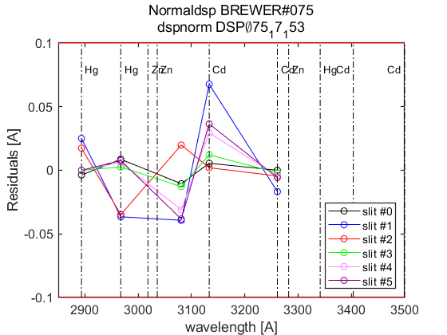 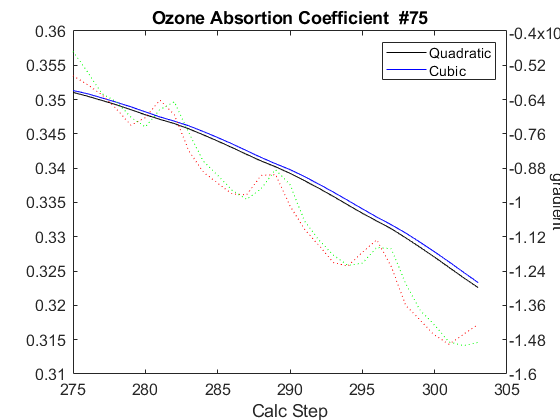
end
load(Cal.file_save,'dsp_summary');
dates=sscanf(cell2str(cat(2,ldsp')),'%03d_%03d_%03d,',[3,Inf]);
dates=datejul(dates(2:3,:)');dates=dates(:,1);
dsp_summary{Cal.n_inst}.info=cellstr(datestr(dates))';
dsp_summary{Cal.n_inst}.res=res;
dsp_summary{Cal.n_inst}.detail=detail;
dsp_summary{Cal.n_inst}.salida=salida;
save(Cal.file_save,'-APPEND','dsp_summary');
ldsp =
4×1 cell array
{'075_11_191'}
{'075_13_166'}
{'075_15_152'}
{'075_17_153'}
ix=sort(findobj('tag','DSP_QUAD_RES'));
printfiles_report(ix',Cal.dir_figs,'aux_pattern',ix);
close all
naux =
1
figura =
'075_figures_DSP_QUAD_RES_1'
naux =
2
figura =
'075_figures_DSP_QUAD_RES_2'
naux =
3
figura =
'075_figures_DSP_QUAD_RES_3'
naux =
4
Tabla - resumen con resultados DSP y Umkehr
QUAD_SUM_table={}; rows={}; tabla_QuadSum={}; format short g;
if config_orig(14)~=config_def(14)
idx=1:length(res)+1; idx(end-1)=0; idx(end)=length(res);
for t=[1:length(res)-1,length(res)+1]
tabla_QuadSum{t}=num2cell(round(res{idx(t)}(end-1,:,1)*10^4)/10^4);
end
tabla_QuadSum{length(res)}=num2cell(round(res{length(res)}(res{length(res)}(:,1,1)==config_orig(14),:,1)*10^4)/10^4);
Q_SUM_table_RowLabels={'Current',dsp_summary{Cal.n_inst}.info{:},dsp_summary{Cal.n_inst}.info{end},'Final'};
else
for t=1:length(res)
tabla_QuadSum{t}=num2cell(round(res{t}(end-1,:,1)*10^4)/10^4);
end
Q_SUM_table_RowLabels={'Current',dsp_summary{Cal.n_inst}.info{:},'Final'};
end
tabla_QuadSum_str=cat(1,tabla_QuadSum{:});
data_ini=cellfun(@(x) (round(x(:,1)*10^4))/10^4,{config_orig(8),config_orig(9),config_orig(10)},'UniformOutput',false);
data_fin=cellfun(@(x) (round(x(:,1)*10^4))/10^4,{config_def(8),config_def(9),config_def(10)},'UniformOutput',false);
QUAD_SUM_table=[{config_orig(14),data_ini{:}}
tabla_QuadSum_str(:,[1 2 4 5])
{config_def(14),data_fin{:}}];
disp([Q_SUM_table_RowLabels',QUAD_SUM_table]);
label_1={'slit\#0','slit\#1','slit\#2','slit\#3','slit\#4','slit\#5'};
UMK_TABLE={};
for um=1:length(res)
steps_umk=res{um}(end-1:end,1,1);
UMK_TABLE{um}=[];
for iumk=1:2
label_2={sprintf('step= %d ',fix(steps_umk(iumk)));'WL(A)';'Res(A)';'O3abs(1/cm)';'Ray abs(1/cm)'};
if iumk==2, dumk=0; else dumk=iumk; end
data=[label_2,[label_1;num2cell([round(detail{um}(1,:,end-dumk,1));detail{um}(2:4,:,end-dumk,1)])]];
UMK_TABLE{um}=[UMK_TABLE{um};data];
end
end
'Current' [291] [ 0.34] [ 2.35] [ 1.139]
'10-Jul-2011' [291] [0.3383] [3.1577] [1.1401]
'15-Jun-2013' [291] [ 0.342] [3.1699] [1.1496]
'01-Jun-2015' [291] [0.3414] [3.1186] [1.1509]
'02-Jun-2017' [291] [0.3382] [3.1407] [ 1.141]
'Final' [291] [ 0.34] [ 2.35] [ 1.139]
Tablas y ficheros de definiciones latex
indx=1;
for t=1:length(res)
if t==1 indx=[]; else indx=t-1; end
matrix2latex_QDETAIL(QUAD_DETAIL{t},...
fullfile(Cal.file_latex,['table_QDETAIL',num2str(indx),'_',Cal.brw_str{Cal.n_inst},'.tex']),...
'alignment','c','resize',0.9,'size','footnotesize');
matrix2latex_ctable(UMK_TABLE{t},...
fullfile(Cal.file_latex,['table_UMK',num2str(indx),'_',Cal.brw_str{Cal.n_inst},'.tex']),...
'alignment','c','resize',0.9,'size','footnotesize');
end
matrix2latex_ctable(QUAD_SUM_table,fullfile(Cal.file_latex,['table_dsp','_',Cal.brw_str{Cal.n_inst},'.tex']),...
'Columnlabels',{'Calc-step', 'O3abs coeff.', 'SO2abs coeff.', 'O3/SO2'},...
'RowLabels', Q_SUM_table_RowLabels,'alignment', 'c',...
'resize',0.8,'format',{'%d','%6.4f','%6.4f','%6.4f'},'size','footnotesize');
if length(res)>1
d_p=[length(res)-1 length(res)]; tags={'','new'};
else
d_p=1; tags={'new'};
end
idx=1;
for t=d_p
latexcmd(fullfile(Cal.file_latex,['cal_wavelengthDSP',tags{idx},'_',Cal.brw_str{Cal.n_inst}]),...
['\Auno',tags{idx}],round(res{t}(end-1,2,1)*10000)/10000,...
['\Ados',tags{idx}],round(res{t}(end-1,4,1)*10000)/10000,...
['\Atres',tags{idx}],round(res{t}(end-1,5,1)*10000)/10000,...
['\UMKoffset',tags{idx}],fix(res{t}(end,1)));
idx=idx+1;
end
Eto para escribir resultados a hoja excel.
for dsps=1:length(ldsp)
legend1={'step',sprintf('ICF (%d, %d)',CSN_icf{dsps}(1),CSN_icf{dsps}(3)),'abs step','A1 Q','A1 S'};
dsp_table=NaN*ones(9,size(legend1,2));
dsp_table(:,1:5)=[res{dsps}(:,1,1),NaN*ones(9,1),res{dsps}(:,1,1)+salida{dsps}{1}.cal_ozonepos,...
res{dsps}(:,2,1)*10000,res{dsps}(:,2,2)*10000];
dsp_table(end-1,2)=CSN_icf{dsps}(2)*10000; aux=round(dsp_table); aux(:,[2 4 5])=aux(:,[2 4 5])/10000;
aux=[legend1;num2cell(aux)];
cell2str(aux,'\t')
xlswrite('./DSP/dsp_todo.xls',ldsp(dsps),Cal.brw_name{Cal.n_inst},['A',num2str(1+(dsps-1)*11)]);
xlswrite('./DSP/dsp_todo.xls',aux,Cal.brw_name{Cal.n_inst},['B',num2str(1+(dsps-1)*11)]);
end
xlswrite('./DSP/dsp_IZO2.xls',[Q_SUM_table_RowLabels',QUAD_SUM_table],[Cal.brw_name{Cal.n_inst},'_sum']);